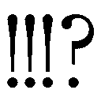

| SOUL CATCHER(S)―Interlude― 鳴苑高校吹奏楽部冬合宿報告書 | |
| 神海英雄 | |
この本は縦書きでレイアウトされています。
また、ご覧になる機種により、表示の差が認められることがあります。
★この作品はフィクションです。実在の人物・団体・事件などには、いっさい関係ありません。
ＣＯＮＴＥＮＴＳ
＃１ 混合三重奏
＃２ 組曲
＃３ 歌劇より
＃４ 練習曲
＃５ 弦楽独奏
＃６ 交響曲
時は冬。冷たく乾いた風の吹く晴天の午後。
鳴苑高校吹奏楽部に、未経験者でありながら指揮者を志望する不思議な力を持った一年生、神峰翔太が加わってから、初めての演奏会となる天籟ウィンドフェスが終わって一週間が経ったその日。
最後まで波乱万丈のうちに幕を閉じた天籟フェスを否が応にも思い起こさせるがごとく――土曜の半日授業を終えて迎えた毎年恒例の吹奏楽部冬合宿は、再び波乱とともに幕をあけた。
他の誰にとってそうでなくとも、高校一年にしてその演奏に〝遺伝子に突き刺さる音〟という類なき美称が与えられた名サックス奏者、刻阪響にとっては、間違いなくそうであった。
さて、その発端となる出来事の起こる少し前、各自の担当楽器を掃除しながらおしゃべりする声が飛び交う賑やかな音楽室で。
（......うーん......）
刻阪は少々ばかり、手持ち無沙汰の状態だった。
吹奏楽で使うような複雑な機構をかかえている楽器は、普段気をつけていてもどうしても見えないところに汚れがたまってしまう。そのため鳴苑高校吹奏楽部では、今回のように大きな演奏会の前後などに、楽器と、ついでに音楽室周辺の大掃除の時間を取っていた。
木管パートは音楽室で、打楽器パートは音楽準備室と廊下で、そして金管パートは音楽室周辺の普通教室に分かれて掃除をするなか――その予定を知らず、昨晩自宅で楽器を大々的なオーバーホールにかけたばかりの刻阪は、どうにもやることがなかった。
なお、自宅で掃除をしている刻阪が、自分の楽器を大切にしている部員である、というのはもちろんではあるが、このタイミングまで掃除をしていない他のメンバーが怠惰である、というわけでもない。
吹奏楽用の楽器というものは、一般的な高校生からしたら高価なしろものだ。最低でも数万から数十万円、より良い音を出そうと思えばさらに桁が上の金額を出す必要に迫られる。県内上位の実力を持つ鳴苑高校においても、部員の半数以上は学校持ちの楽器を借用する形で使っており、それらを自宅に持ち帰ることは原則禁止されていた。そのため、清掃も部活時間内に学校で行うのが普通である。音楽一家に生まれ、演奏する楽器はすべて自前のため持ち帰り自由である刻阪が、どちらかといえば例外的な存在なのだ。
（とにかく、ここにこうして立っててもしかたないしな）
とりあえずは制服からジャージに着替えてこようかと音楽室を出たところで、刻阪の耳に言い争う声が届いた。
「――だから、お前に悪気がないのはわかっているけど」
「俺は見ていただけだ。邪魔にならないよう、後ろで」
「けど、間違った掃除のやり方をしたらどうせ口を出すだろう？」
「今日はまだ出してない。まあ、年度終わりのこの時期に、今さら間違えるようなやつもいないだろうが......」
「だから、ちょっとでも間違えたらまた怒られるかもしれないっていうプレッシャーが、パートメンバーにとっては」
「正しいやり方を教えているだけで、別に怒ってはいない」
「だから......！」
そこまで言って言葉をさがすように言いよどんだのは、吹奏楽部の部長である、トランペットパートの奏馬俊平。各自の楽器掃除が終わったあとは今夜の男子部員の宿泊場所である音楽室の大掃除をやることになっていることにそなえてか、鳴苑ジャージの上にさらにエプロンをし三角巾とマスクをつけた完全装備で、右手には早やハタキを持っている。
そして、その奏馬に言い返しているのは、こちらは学校制服のままの、トランペットパートリーダーである〝暴君〟、音羽悟偉だ。奏馬との言い争いにうんざりした表情で視線をめぐらしたところで、音楽室から出て来たばかりの刻阪と目があった。
「刻阪、いいところに来た。お前もなにか言ってやれ」
「えっ？ 言うってなにを......」
「ああ刻阪くん、いいところに来てくれた！ 音羽がひどいんだ......」
「えっ？ えっ？」
いきなりふたりから話が、しかしその意味しているところは確実に真逆であろう話が振られ、戸惑う刻阪の後ろから、今度はまた別の声が聞こえて来た。
「奏馬ァ！ いつまで待たせンだ、いいかげん金よこせ！」
「打樋先輩？」
そこだけ聞くと少々不穏当な発言とともに音楽準備室から出て来たのは、打楽器のパートリーダー、〝棟梁〟こと打樋透であった。
「打樋、ちょっと待って。ちょっと、買い出しのメンバーについても......」
「お前のその言い分で、ウチの連中をさっきからずっと待たせてんだぞ。四の五の言ったってしまいにゃ出すんだから、どうせ出すならいま出せ、いま！」
もしや鳴苑吹奏楽部内ではカツアゲ事件が起こっているのか、と、部外者が見たらそう心配するような剣幕で、打樋は奏馬につめよった。
「ちょっと待ってくれよ。いまは音羽との話がまだ......」
「さっきからまだまだって......いつ終わンだよ？」
「あとちょっとだけだよ。もうすぐ」
「もうすぐ？」
「あと少し」
「少し？」
「......もう終わるところだよ、だから、打樋はちょっと向こうに」
「奏馬、終わりなら、俺は戻るぞ」
「音羽、まだ終わってない！」
「奏馬、いつ終わンだよ！」
詰め寄る打樋と立ち去る音羽。ふたりに挟まれてアタフタする奏馬。そんな三人から少し離れたところで刻阪はひとりポツンと立っていた。どうもこの場に自分がいる意味はなさそうだったが、かといっていちど話しかけられた手前、勝手にいなくなるのも気がとがめる。せめて一声かける必要はあるだろう。
「あのー......僕は、どうすれば......」
しかし、そう軽く片手をあげはしたものの、三人がワーワーと言い合っているところに刻阪が割りこむ隙はどうにもなさそうだ。しかたなく一時停止状態で待っていた刻阪が、あげたままの自分の手の、親指の爪の伸び具合をなんとなくチェックしはじめたころに、打樋と音羽を交互に相手にしていた奏馬がなにかを思いついたように目を見開いた。
「そうだ、刻阪くん！」
「はい？」

「懇親会用のお菓子の買い出し、ですか？」
刻阪の言葉に、奏馬はコクリとうなずいた。
（買い出しかあ。そういえば、行ったことないな）
たかがお菓子の買い出しであるが、刻阪にとっては少々苦手な分野の依頼ごとだ。
音楽づけの人生を歩んできた刻阪は、サックスの腕前については〝並みの高校生のレベルをはるかに凌駕する逸材〟であるいっぽう、生活能力に関しては〝並みの小学生のレベルを大きく下回る世間知らず〟だ。
いや、実際にはそこまでひどくはないはずだが、すくなくとも実の姉である刻阪楓は、弟をそう評していた。実際、刻阪は今日の今日まで、いわゆるスーパーマーケットというところで買い物をしたことがない。せいぜいが、学校の行き帰りに友人に――神峰につきあって、コンビニで買い食いをしたことがあるくらいだ。
それを周囲も知ってか知らずか、これまで所属した小中学校の吹奏楽部や参加した演奏会で〝打ち上げ〟やら〝懇親会〟やらには数知れず参加してきたものの、その買い出し係として刻阪が指名されたことは一度もなかった。
「買い出し......って。部員と、あと顧問の谺先生を合わせた人数分のお菓子を買ってくればいい......ん、ですよね......？」
弱々しく確認する刻阪に対し、奏馬はことさら明るく告げた。
「心配しなくても大丈夫だよ！ 打樋と音羽も一緒なんだから！」
「買い出しは打楽器パートで行くって話だったのに、いったいどうなってンだ？」
打樋が、苛立ったようにつま先で廊下を叩く。さきほど打樋が金を出せと言っていたのは、別にカツアゲではなく、買い出し用のお金を奏馬があずかっているので、それを出せ、ということだったらしい。ちなみに、打樋本人は気づいていないようだったが、腹立ち紛れにつま先で刻んでいるリズムは、なぜか三三七拍子だった。
そんな打樋に、奏馬は輝くような笑顔で答えた。
「いや、前から思ってたんだけど、打楽器パートだけに買い出しをまかせると、万が一......万が一だよ？ 内容に文句が出たときに、それが原因でパート間の確執が生まれちゃいけないと思ってね。だから、ここは、打楽器の打樋に、金管の音羽、それに木管の期待の星である刻阪くんにまかせて、あとあと他パートへからの不満を出にくくさせようと！ そういうわけだよ！」
「懇親会の菓子選びが原因でパート間の確執とか、話が大げさすぎンだろ」
「昔から言うじゃないか。食べ物の恨みはコワイって」
「なら、ウチのやつらと一緒にコイツらふたり連れてくか？」
「......実は、今年も合宿の準備はどこも人数ギリギリだからさ......その、普段から重い楽器を運搬し慣れている腕力自慢の打楽器パートのメンバーは重要な戦力だから、できる限り校内に残って欲しいんだよね」
奏馬が、エプロンのポケットから出した紙をガサガサと広げながらそう言った。どうやら合宿準備に関する人材配置表らしい。刻阪が軽くのぞきこんだだけでも、あちらこちらに名前を書いてはバツをつけたりマルをつけたり、あるいは矢印を消したり伸ばしたり。奏馬の葛藤の後がそこにはありありと残っていた。
奏馬が部長になる以前は、こういう楽器に関係のない部の共同作業のときは、部内の親睦を深めようということで、普段関わらない別パートの人間同士を組ませることが多かった。しかし今回は、なんとなく、ではあるが、この秋に刻阪の誘いにより入部した指揮者志望の一年生神峰翔太について、現段階ではっきりと好意的な者と、はっきりと否定的な者とを、なるべく同じ係に配置しないよう配慮しているように見受けられた。
天籟フェスの前に〝影のスーパーアイドル〟ことクラリネットパートリーダーの邑楽恵が、神峰に好意を――指揮者的な意味と、それとはまた別に個人的な意味の両方において――抱いて以来、邑楽に近しい女子の多い木管パートメンバーは、おおむね神峰に対し好意的だった。
いっぽう、まだ過半数のパートリーダーが神峰否定派である金管のパートメンバーは、どうしても神峰に対し微妙なスタンスになってくる。
そんななか、パートとしては神峰好意派ではあるものの、あくまでも〝打樋の決定だから〟というスタンスが強い打楽器パートメンバーは――腕力自慢、という奏馬の発言は、たしかにそれ自体も本心ではあるのだろうが、人間関係的にほどよく中間的な存在としていろいろな係に配置しやすいのだろうな、と、刻阪は推察した。
「その、杞憂なのかもしれないけど......今いるメンバーが中心となって来年は全国を狙おうっていう、とにかく大事な時期だろ？ いろいろスッキリしていないこともまだ残っているし、少しでも遺恨の種になりそうな要素は、念のため避けたいっていうか、さ......」
「......まあ、いいけどよ」
刻阪と同じく奏馬の手元をのぞきこんだ打樋も刻阪と同じことに気がついたのか、まだ少し微妙な表情ながらもうなずいた。
「音羽もいいよな？」
「俺はかまわん」
いっぽう音羽は、ワクワクを隠しきれない表情だ。
奏馬の急な提案には、他の部員の楽器掃除に必要以上のプレッシャーを与えてしまう音羽をていよく学外に追っ払おう、という意図も含まれていることは明白だった。が、それに対する不満よりも、〝打樋と刻阪と一緒にお菓子の買い出しに行く〟ということへのワクワク感が上回ったようだ。
（......この感じ。さては、音羽先輩もこれが初めての買い出しか......奏馬先輩の苦労は分かるけど、このメンバーで、本当に大丈夫なのか......？）
しかし、刻阪がその心配を口にする間もなく、ようやく話がまとまったとばかり、打樋が勢いよく宣言した。
「ウシャア！ んじゃ、この三人で出発だ！」
住宅街の細い路地をくねくねと曲がった先の、周囲には錆びたシャッターが降りる廃店舗にはさまれたその場所に、打樋の目指す店はあった。
おそらく――いや、確実に、刻阪たちが生まれる前からこのままのたたずまいでいたのだろうな、と推察される瓦屋根の民家風建物。刻阪が両手を広げたほどの幅しかないその民家の屋根にふかれた瓦の隙間からは枯れ草がのぞき、実際にはそんなことはないのだろうが、家全体が全体的に少し傾斜しているような印象をうける。
その家幅いっぱいに作られた店先には、色とりどりの駄菓子がならんでいた。
世代を超えた駄菓子の代名詞とも言える、個別包装された一個九円のスナック菓子「ウメェ棒」。謎の平たい食べ物に様々な味付けがされた「濃い味くん太郎」。その後ろで、壁際に行儀よく並べられているプラスチックの入れ物のなかには串で刺された酢イカやしょうゆイカ、あるいはソースのかかった薄手のハムカツもどきが無造作に放りこまれており、その下のガラスケースの中には砂糖のかかったミニサイズの揚げドーナツ。隣りのケースには黒糖でコーティングされた、直方体のふ菓子が積み木のようにみっちりと詰めこまれている。
壁には、開けてみるまで中身が分からない野球やサッカーの選手カードに、おもちゃのメガネやプラスチック製のヘアアクセサリー、それにスーパーボールなどが、狭い売り場で精一杯自己主張するかのように、互いに重なり合うようにしてぶら下げられていた。
音羽、打樋、そして刻阪。この三人のなかで、唯一〝部活の買い出し〟に詳しそうな打樋につれてこられたその店は、正真正銘、駄菓子屋であった。
「スゲェだろ？」
打樋は、音羽と刻阪を前に、手の平の付け根あたりを鼻の下にあてると、自慢げにかるくこすりあげる。
「今どきこんなパーフェクトな駄菓子屋は、ちょっとやそっとじゃ見つからねえぜ。学校帰りに偶然にもこの店を見つけたとき、俺ァ思わず叫んだね」
「ダガシヤ......」
「......ダガシヤ？」
刻阪と音羽は、それぞれに呟く。
「なんだふたりともこういう店は初めてか？ 安くて旨くて懐かしい！ 駄菓子を出されて喜ばねえ日本人はいねェぜ！」
「へえ......そういうものなんですか」
刻阪はそう言いながら、店先のお菓子の値段を軽く流し見て驚いた。お菓子は高いものでも百円を超えることはまずなく、のきなみ二十円から十円程度。ものによっては十円を切っていることすらあった。
「こんなお店、あったんですね。すごいな」
「おお！ 部員一人あたり菓子代として三百円があてこまれてっからな。ウメェ棒なら、三十本買えるってことよ！」
「へえ......ん？」
感心しかけた刻阪だったが、部員数×三十本で、合計で軽く千の位に届くウメェ棒をかかえている自分たちの姿を思い浮かべる。いや、いくらひとつひとつは小さいとはいえ、その数はどう考えても無理だった。
「刻阪、先走んな。いくらうまくても、ウメェ棒だけってわけにもいかねェ。予算はたっぷりあんだ。こっちの高級品もいろいろ取り混ぜて、俺が上手いことコーディネートしてやっからよ」
「高級品......」
打樋が親指で示した〝高級品〟とは、ちょっと大きめのパッケージに入ったスナック菓子やチョコ菓子。あるいは、このなかではなんとなく数ランク上の高級さをかもしだしている箱に入った酢昆布などだった。どれも百円玉でおつりが来る値段設定ではあるが、この中ではたしかに高級品だ。
そして、その酢昆布らしい香りがどこからともなくただよってきて。刻阪がふと周囲を見回すと、一緒にきた音羽が、箱から出した酢昆布を、モグモグとやっているところだった。
「音羽先輩!? なにやってるんですか!?」
見れば、音羽は酢昆布以外にも、ウメェ棒を数本すでにかかえこんでいる。
「ダメですよ音羽先輩、勝手に食べちゃ！ あ、ダメなんですよね打樋先輩？」
「音羽、ここじゃ支払いにカードは使えねェぞ」
「現金精算でもう払った。お前らが話をしているあいだにな」
音羽が指さした先では、ガラス戸で仕切られた店の奥で、老眼鏡をかけた七十は過ぎていそうな老女が、座布団の上で背中を丸めちょこんと座っていた。
ところせましと商品がならべられた店頭と同じく、店の中もまた、大人一人がどうにか通れるほど狭い通路の左右にキャラクターの描かれたガムやら、色とりどりのチョコやらがぎっしりみっちりぴっちりと並べられていた。
その通路を奥まで行ったところの、一段高くなった畳の上に座る老女は、よくみればうつらうつらと舟をこいでいる。そのひざの横に置かれた木製のお盆の上に、まるでお地蔵さまに対するお供えもののごとく、十円・五十円・百円玉、時に五百円の超高額硬貨や、なけなしの一円玉やらが、山積みになっていた。
「あそこに置いておいた。それでいいんだろう？」
「置いておいたって......あのおばあさん、寝てるじゃないですか」
その刻阪のツッコミに応えたのは、音羽ではなく、打樋のほうだった。
「ああ、あのバーちゃんなァ。トシなもんだから、昼メシのあとはああやってずっと寝てんだ。耳が悪いとかで、いったん寝ると夜までは雷が鳴ろうがなにが鳴ろうが起きねェらしい。だから、この店でバーちゃんが寝ているときは、ああやって金だけ置いとくんだ。俺もよくやるぜ」
「万引きされたりしないんですか？」
「この店に来る小学生の間じゃ、あのバーちゃんがしょっちゅう寝ているのは、万引きしたやつが昼寝しているときの夢に出てとり殺すため、って話になってるからな」
「はは、小学生ってそういう怪談話好きですもんね」
「まァ、その噂を流したのは、俺だけどよ」
打樋が、ニヤッと笑って言った。
「いい仕事をしているな、打樋」
「おう、刻阪、せっかくだ。お前もなにか食えよ。おごってやる」
「いや、そんな、悪いですし......」
断ろうとした刻阪だったが、打樋が、ぐい、と差し出してきたそれを思わず受け取ってしまった。紫色のパッケージのウメェ棒だ。どうやら、パッケージの色ごとに味が違うようで、それには〝いわしめんたいこ味〟とある。
「ええと......じゃあ、ごちそうになります」
刻阪は、おそるおそる、パッケージをはずして口に入れてみる。実は、駄菓子なるものを食べてみるのは、これがはじめてだった。その昔演奏会かなにかで話をしたどこかのグルメ評論家とやらが、「駄菓子なんてマズいものを食べると感性が鈍る」と言っていたのを、口に入れる直前に思い出したのだが、そのときにはどうにも後の祭りで。しかし――。
「――へえ！ おいしいですね！」
実際のいわしめんたいことは確実になにかが違うのだが、しかしたしかにその味を思わせるなにかがそのお菓子にはあって――刻阪は、その味はもちろんのこと、その再現性の高さに感動をおぼえる。
「マズかったら〝ウメェ〟棒じゃなくなっちまうからな。オレが好きなのはこれだ。海苔ジャケにぎり味」
「俺はこれだな、ソーセージガレット味。こんなものまで十円で売られているとは驚いた」
「音羽、お前やっぱちょっと変わってんな」
「そうか？」
「マズくはねえけどよ。ソーセージは分かるがガレットってなんだ」
「いや、ガレットというのは......」
音羽が説明しかけたそのとき、遠くから甲高い声が聞こえて来た。
「おい！ トーリョーがいるぜ！」
「ほんとだ！ トーリョーだ！」
見れば、体操服入れをぶらさげて〝たてぶえ〟がのぞくランドセルを背負った、小学校高学年とおぼしき男子五・六人ほどの集団が、三人のほうへ凄い勢いで駆け寄ってくるところだった。なにを言っているのかはよくわからないが、とにかく楽しそうにわあわあ叫んでいる。
「トーリョー、またここアソビ来てんのかよォ！」
「コーコーセーのくせにイリビタリ過ぎじゃねーのお？」
「バッカ野郎、今日は遊びに来たんじゃねえよ」
わらわらと周囲に集まって来る小学生たちに打樋はそう答える。どうやらこの小学生たちとは顔見知りらしい。
「部活の大事な用事なんだよ。今日はお前らの相手してるヒマはねェからな」
「トーリョーが部活？」
「なにブ？」
「言ったことなかったか？」
「大工？」
「そんな部あるか。吹奏楽だ」
「ええ――っ!?」
打樋の言葉に、小学生たちの間から、非難のような声があがる。その声に、打樋はあからさまにむっとした表情を見せた。
「なんだよ今の、えーっ、てのは」
「だって、吹奏楽って女がやるもんだろ？」
「吹奏楽部に入る男は、体育のできない運動オンチだけだよなー」
「な！」
「トーリョー、見損なったぜ！」
「お前らなあ、吹奏楽は体力勝負なんだぞ」
「楽器プープー吹くだけでそんなに体力使うかよ！」
実際のところ、鳴苑吹奏楽部の基礎練メニューには体力作りなども含まれているのだが、小学生たちは打樋の言うことをはなからハッタリだと決めてかかったようだ。
プロオーケストラでの男性奏者は決して少なくないのに、小中高の吹奏楽部で男子部員というのは必ずといっていいほど少数派だ。音楽は音楽で、いわゆる運動競技とはまた別種の体力が必要になるのだが、部外者にはなかなか理解できないことらしい。
幼いころからサックスに親しみ、識者の間では神童とすら言われたほどの刻阪でも、〝運動ができないから音楽をやっている軟弱野郎〟と決めつけられて、からかわれたことがある。ものを知らない小学生がうっかりそのような発言をしてしまうのも、しかたのないことかもしれなかった。
「オレらが、夏は暑くて冬は寒いグラウンドでサッカーしてるあいだ、あいつらエアコンのきいた音楽室で楽器鳴らして遊んでるだけなんだぜ」
「楽なもんだよなー」
「な！」
「タイコ叩いてるだけのやつもいるよな」
「あれなんかもっと楽そうだよなー」
「な！」
「――――テメェら......いま、なンつった......」
「うわっ！ なんだよトーリョー！」
「打樋先輩、ダメですよ！」
相手は小学生と多少は我慢していたものの。
愛する打楽器を安易に批判され、怒りの沸点を超えたらしい打樋が、目をつりあげて小学生にとびかかろうとする。それを刻阪は、体をはってどうにかふせいだ。
「刻阪、どけ！ こいつらに、吹奏楽の素晴らしさをたたっこんでやる！」
「たたきこんじゃダメですってば！ 落ち着いてください！」
「トーリョー、本当のこと言われたからって怒るなよな！」
「バカにされるのがイヤなら、吹奏楽なんかやめろよな！」
「ンだとォ!? 吹奏楽なんかとは、どーいう言い草だ!!」
「トーリョー、やるかあっ！」
小学生たちは、ランドセルにさしていたたてぶえをするりと引き抜いて、打樋にむかって日本刀の要領でかまえた。
「かかってこぉいっ！」
「こら！ きみたちも挑発しないでくれ！」
「......ひどいものだな」
背後から聞こえてきた怒りを含んだ声に、小学生たちはいっせいに振り向いた。
そこには、神峰曰く「心に巨獣と赤ん坊を抱える」男、〝暴君〟音羽が、無表情で立つ姿があった。
「語るな。理解する気がないのなら」
単純明快な打樋と違って、音羽は怒りを顔に出すことは少ない。しかし、表情の浮かんでいないその顔こそが、音羽が芯から怒っていることを示すものであることは、この場にいる誰の目にも明白だった。
その音羽が、小学生に向かって手を伸ばす。
「音羽先輩！」
音羽が小学生を殴るのではないかと心配した刻阪だったが、そうではなかった。一瞬したのち、気がつけば、音羽の手には、なにか細長いものが握られていた。小学生たちがかまえていたたてぶえ――ソプラノリコーダーを、近くに立つ小学生の手からすばやく奪い取ったらしい。
「返せよ！」
自分のたてぶえを抜き取られた事に気づいた小学生が、音羽に向かって手を伸ばす。しかし音羽はそれにはかまわず、ボロボロになっているカバーをはずし、中からまっさらなリコーダーを取り出した。
「外身の割には、綺麗すぎるな。どうせ、学校授業の音楽すらも、まともにやっていないんだろう」
「別にいいだろ！ 俺のブラックソード返せってば！ カーチャンに言いつけるぞ！」
「知らないのか。これはチャンバラごっこの剣ではなく、音楽を奏でる楽器だ」
言うなり音羽は、そのリコーダーを胸の前にかまえる。そして、一瞬何かを悩むように空を見たのち、歌口から息を吹きこんだ。
（あ......）
今は冬で。時間はまだ昼過ぎで。周囲にあるのは、二階建ての民家と電信柱ばかりで。ひとつ隣りの小道や突き当たりの曲がり角の向こうから、バイクや自転車が走る音がひっきりなしに聞こえてくる。
なのに音羽が演奏をはじめた、その途端に――――。
刻阪は日の暮れかけた夏の草原に吹く風と、遠い稜線の上空にひろがる夕焼け空以外にはなにもない広大な空間のなかに、自分がいるかのように感じた。
好戦的な小学生たちもまた、音羽を見上げ口をぽかんと開いている。
音羽がリコーダーで吹いているのは、有名な交響曲のメロディライン。とはいえ、どちらかといえば歌詞をつけられた編曲のほうが有名で、小学校のキャンプファイヤーなどでもよく歌われている。
刻阪の友人、神峰は、音楽がまるで映像のように見えることがあるという。その説明に疑いは持っていないものの、刻阪には分からない感覚だ。しかし、暮れ行く夏の思い出に直結しているその曲を、いまここにいる誰もが、なにかを懐かしむような遠い目で聞き入っているのはたしかなことだった。
刻阪がそうこう考えているうちに、演奏を終えた音羽はリコーダーから口をはなす。どこか遠くで車のクラクションが響いて、そのけたたましい音で我に返ったらしい小学生たちは、軽く頭を振ったり、耳たぶをひっぱったり、目をこすったりしていた。
音羽はカバーの中にはいっていたらしいクロスで歌口を軽くふき取ると、リコーダーの持ち主である小学生に無言で差し出す。
小学生は音羽からリコーダーを受け取ると、すぐさま自分の口にあて、ぷうっ、と吹いた。リコーダーは、吹かれるがまま、ぴいっ、と運動会のホイッスルが鳴るような音を立てた。
小学生は頭をひねる。音羽が鳴らしたような雄大な音が出なかったことが、不思議でしかたないらしい。なにかトリックでもあるのではないかと、音羽と、手元のリコーダーとを、しきりに見比べた。
「ソプラノリコーダーは、もっとも身近な作音楽器だからな」
そんな小学生を見下ろしながら、音羽が言う。
「この小さな楽器で、人を圧倒することもできる。適当に吹いて出る音は耳障りでしかないが、それは演奏者の力次第だ。とはいえ、なにごとにも早く上達するためのコツというのはある。それは......」
音羽はそこで言葉を切る。音羽の次の言葉を待って、小学生が息を飲む。
さらに、その周囲に集まっていた他の小学生たちも、さきほどまでチャンバラ用にかまえていたリコーダーを、いまは不思議そうに握りしめながら、音羽を見上げている。
音羽は、そんな小学生たちをぐるりと見回すと、満を持してこう言った。
「教えるつもりはない」
「えええええ っ!?」
っ!?」
小学生全員が唱和する。刻阪も打樋も、思わずそれに加わった。
「音羽先輩、そこでやめますか！」
「俺らも気になるだろうが、〝暴君〟よオ！」
「なんだよコイツ！ ありえねえ！」
「教えろよ、ボークン！」
打樋が呼んだ音羽の二つ名を早や覚えたらしい小学生が、音羽に向かって、さきほどまでとは真逆の文句を言う。
「教えてほしかったら、鳴苑高校吹奏楽部に入部することだな」
「おれら小六だぜ！ 高校生って、何年後だよ！」
「良かったじゃないか。いま小六なら、たったの四年後。いや、すでに今年度もあと少しだから、三年後には入部できるぞ。そのうえ、中学の三年間真面目に吹奏楽をやっていれば、鳴苑で入部したときにはきっとうまくなっているぞ。そうしたらオレがたっぷり教えこんでやる。だからパートはトランペットを選べ。いいな？」
「誰もやるとは言ってねえだろ！」
「そのころ俺は卒業しているだろうが、ＯＢ訪問で行く機会もあるだろう」
小学生の訴えを無視してそう語る音羽の笑顔は、今日もっとも輝いていた。
「そうだ、教えてはやらんが、アンコールはいくらでも受け付けるぞ。さあ、次はなにがいい？」
音羽の申し出に、不満げだった小学生たちはしかし、次々に自分の知っているアニソンやら唱歌やらを声高にリクエストしはじめた。
「......俺ァ、生きてる間にあのバーちゃんが昼寝から目を覚ますところを見られるとは思わなかったぜ......」
打樋が歩きながら、打ちひしがれているような、感動しているような、なんともいえない声で言った。
「オレも！」
ついてきていた小学生が、大声で賛同した。
小学生たちにせがまれた音羽がさらに数曲吹き、駄菓子屋の店先で大合奏がはじまった――ところで、店の奥から、店番の老女が「うるさい！」と叫んできて、駄菓子屋前のリコーダーコンサートはそこで強制終了となった。
「悪かったな」
一緒にいた小学生ともども、刻阪たちは駄菓子屋の店先から逃げるように退散していた。ついてきていた小学生の、最後の一人と打樋とが別れのハイタッチを交わすのを見ながら、音羽が刻阪に言う。
「え？ なにがですか？ 僕は別に......」
「刻阪、お前も吹きたかったんだろう。つぎはお前に譲ろうと思っていたんだが」
「いや、僕は別に」
「別にそうでもない、か？ そういう顔をしていた気がするけどな......」
「いえ、本当に、大丈夫ですよ」
「じゃあな、トーリョー！ あと、ボークン！ 今度また、なんか聞かせてくれよな！」
小学生が元気よく手を振りながら去って行くのを見送ったあと、３人は改めて顔を見合わせた。
「ええと......それで、買い出し、どうしましょう？」
「うーン......あの駄菓子屋にゃァ、しばらく行きづれェしな......」
首をひねる刻阪と打樋の前で、音羽は携帯電話を取り出す。そこでなにかに気づいたらしく、
「ちょっと待っててくれ」
と言って、ふたりから少し離れ、電話をかけはじめた。
（......いったい、どこへ連れてこられたんだ、僕たちは......）
どこをどう走ったのかは分からないが、音羽が呼んだ黒塗りのハイヤーに乗って数十分のドライブ。
そうして市街地をふたつほど抜けて連れて来られたのは、見慣れぬ街の駅前通りからいっぽん入った小道にある、外壁を白亜質の煉瓦に見せたフランス料理店だった。
到着そうそう、待ちかねたように店の奥から出て来た背の高いコック帽をかぶった鼻の高い男が、コック帽を脱ぐなり音羽に深々と頭を下げる。
「音羽さま、ご来店ありがとうございます！」
「急な連絡で申し訳ない。そう堅苦しくしないでほしい」
「いえいえ、音羽さまご一家には、いつもごひいきをいただいておりますから」
「今日は、家は関係ない。学校の友人だ」
音羽がそう言って斜め後ろに立っていた刻阪をあごでさすと、コック帽をかぶった男は、刻阪に対してもしごく丁寧に挨拶をした。
「あ、これはどうも。ご丁寧に......」
「刻阪、ここはいいぞ。フランスの一流ホテルで総料理長をまかされていたこの料理長がオーナーを務める、食材から厳選した本格フランス料理の店で......」
音羽が刻阪にそう説明する傍らで、紹介されたばかりの料理長は、刻阪を食い入るように見つめたのち、言った。
「刻阪......もしや、刻阪響さまで？」
「え！ はい、そうです......けど」
「やはり！ わたくし、こう見えてクラシックの大ファンでして......音羽さまが表紙を飾られた月の吹奏楽ジャーナルの《全国高校吹奏楽部特集》で刻阪さまの記事を拝見していらい、一度はそのサックスをご拝聴したいものと思いつめておりました」
「ああ、あれですか。はは......」
刻阪は愛想笑いでどうにかごまかす。
周囲に流されるままに取材を受け掲載許可を出した吹奏楽ジャーナルだが、まさかこんなところにまで波及しているとは思わなかった。
「それに、お姉さまの楓さまにも、つねづねお世話になっておりまして」
「えっ!? どうして姉さんが？」
「当店はカフェタイムなどたまに店内でミニコンサートを開催しているのですが、フランス本国でも活躍されている楓さまのバイオリンは、お客さまからも大変なご好評をいただきました。またのご帰国の際には、是非にも再演をとお願いしていたところです」
「なるほど」
刻阪の姉の楓は、プロのバイオリン奏者だ。たまの帰省時にもあまり家にいないと思っていたら、どうやらこんな場所で演奏しているらしい。
「ン？ 刻阪、お前、姉ちゃんいンのか」
二人の後ろで退屈そうに話を聞いていた打樋が、刻阪に尋ねる。
「はい。隠していたわけじゃないんですけど」
「責めてるわけじゃねェよ。初耳だったからきいただけだ」
「いや、すみません。姉さんとはやっている楽器も違うし、先入観をもって見られるのがイヤで」
「ま、家族の話ってのァ照れくせェもんだよな」
そう刻阪と話す打樋を見ていた料理長は、音羽にそっと耳打ちする。
「あの......音羽さま、こちらのかたも、お連れさまでしょうか？」
「そうだが？」
「............」
料理長は再び打樋を見る。刻阪は、その視線が、あまり好意的なものではないことに気づき、そしてその理由にすぐに思い至った。
一流の料理店には、ドレスコードというものを設けている場所が多い。たまたま制服を着てきたゆえに、Ｙシャツにジャケット、ネクタイという最低限のドレスコードをクリアしている音羽と刻阪はともかく、毛玉のついた学校ジャージを着崩し、頭には威勢のよいバンダナを巻いている打樋は、この格調高そうなフランス料理店に、たしかに不似合いな存在だっただろう。さっきまで黙っていたこともあり、まさか連れだとは思わなかったらしい。
「なにか問題でもあるのか？」
しかし、上得意であるらしい音羽にそう尋ねられ、料理長はわずかの逡巡ののち、
「いいえ、なにもございません。すぐにお席をご用意致しますね」
そう言いながら、営業スマイルを浮かべた。
とはいえ、ディナータイムでもないのだから、席についてしまえばさほど気にすることもないだろう、と考えていた刻阪が甘かった。
「へえ、すげェな。この上のやつ本物のシャンデリアか？」
「本物偽物の基準はよくわからないが......まあ、シャンデリアだな」
「そういやあっちの壁のあの果物の絵も、美術の教科書かなんかで見たな」
「あれはさすがに偽物だろう」
「あの、打樋先輩、もう少し声を落として......」
いつも通りの打樋なのに、刻阪が思わずいさめたくなってしまうほど、店内にはどこか粛々とした雰囲気が漂っていた。
クラシックが好きだと言っていた料理長の趣味なのか、観葉植物で隠された各所のスピーカーからはモーツァルトのピアノソナタが静かに流れている。昼なのでフォーマルドレスやイブニングを着た客こそいないが――ビジネススーツやカジュアルスーツ、あるいはモード服をさりげなく着こなした中壮年の男女が、店内のテーブルの七割ほどを埋めている。
そんななか、高校生で。しかも一人は学校ジャージ姿の刻阪たち三人は、その場で明らかに浮いていた。
しかも、運悪くフロア中央あたりのテーブルにしか空きがなかったらしく、店内の誰からも目につく場所に座らされてしまっている。
じろじろとあからさまな視線を向けて来るような客こそいないものの、たまにチラリと向けられる眼差しが、彼ら異分子に対する消極的な嫌悪を含んでいることは明白だった。
「申し訳ありません音羽さま、あいにく個室は予約でふさがっておりまして......」
「俺はフロアのほうがいい」
孤高に見えてその実誰よりも人と関わることが好きな音羽が、手ずから水を運んで来た料理長の言葉に、少し不思議そうに答える。
そういうことではなく、この場に不似合いな彼らを――とくに打樋を、人目につかない個室に押しこめておきたかったんだ、という、料理長からの遠回しなメッセージが含まれていることに気づいたのは、三人のなかでどうやら刻阪だけらしい。
テーブルにおいた三客のワイングラスに、瓶に入ったミネラルウォーターを注ぎ、料理長は一礼して去って行った。刻阪は、自分の前に置かれたグラスの水を一口飲んで気持ちを落ち着かせ、両手をひざにおくと、刻阪と同じように喉をうるおしている音羽に向き直った。
「あの、音羽先輩。ひとつ大事なことを確認したいんですが」
「なんだ？」
グラスを置き、音羽がこたえる。
「僕たちはいったいどうして、ここへ連れて来られたんですか？」
「料理が出てくれば分かる」
「料理？」
「駄菓子屋で、打樋が、知らないと言っていただろう？」
「......もしかして〝ガレット〟ですか？」
「そうだ」
ガレットというのは、ものすごく詳細を省略して言えば、そば粉の生地で作ったクレープ風の、フランスの郷土料理である。ちなみに、音羽の好物だった。
「ガレットを食べるためにここへ来たんですか？」
「そうだが？」
「お菓子の買い出しの話は......」
「食べ終わってから考えればいいだろう。どうせなら面白いほうがいいだろう？」
「いえ、その、そういう問題じゃなく、そもそも僕には、太陽が大分傾いているように見えるんですけど......あの、それに」
ド、レ。
「音羽先輩のご厚意は嬉しいんですけど」
ド、レ、ミ♭。
「仮に、僕らにガレットを味わう余裕があったとしても」
ド、レ、ミ♯、レ、ド。
「だからって、わざわざこんな遠くまで」
ド、レ、ミ♭、レ、ド。
「来なくても......打樋先輩、さっきからなにやってるんですか？」
「調律」
自分のグラスの水を、飲んだり継ぎ足したりしていた打樋が、持っていたミートナイフの先で、テーブル上の三客のグラスを順に叩いた。
「ためしにたたいてみたら、ちょうどいい音階になってたからよ......ついでにな」
ド、レ、ミ、レ、ド。
「ウッシャ！ パーフェクトォッ！」
「はい、そうですね、音程は」
音程は完全無欠だったが、それをやっている打樋の行動はつっこみどころが多過ぎた。
ガラスで作られたグラスを硬い棒で叩くと、透明な美しい音が響くのは、誰でも知っているだろう。
さらに、そのグラスに水が注がれていると、鳴る音の音程が変化する。水の量が多ければ低く、少なければ高くなる。グラスベルとも呼ばれるそれは、刻阪も以前遊びでやったことがある。たしか、小学校低学年のころの話だが。
「打樋先輩、いまはやめましょうよ......まわり、気づいてます？」
「ん？」
グラスベルの調律に夢中になっていた打樋は、顔をあげ、刻阪が相手に見えないよう指さす先を追う。そして、ふたつ離れたテーブルに座る二人連れの女性客と目があうと、ニッ、と笑ってみせた。相手の女性も、つられるようにして笑顔を返し、打樋から目をそらす。
「観客がいるとなると、なおのこと気合いが入ってくるなァ！」
「逆です！ 入れないでください！」
「いいんじゃないか？」
ふたりの会話を黙って見ていた音羽が、言うなり片手をあげ給仕係を呼ぶ。
刻阪は、どうにも絶望的な気分になった。
しばらくのち。給仕係が運んで来た大量のグラスに、それぞれの音階に合うよう水を入れたものを、鉄琴の鍵盤と同じように並べている。右に一オクターブ、左に一オクターブ、左右に鍵盤二オクターブ分のグラスを前にした打樋は、ばちの代わりかミートナイフをカニのはさみのようにして片手に二本ずつ、計四本構えていた。
（......もう、帰りたい......）
突如店の中央ではじまったグラスベル調律祭りに、客たちはなにかの見世物でもはじまるのかと勘違いしたらしい。そして、ある意味、ショーでも出し物でもなく、見世物という言い方が、一番正しかったかもしれない。調律の邪魔になるからと、クラシックのＢＧＭを音羽が切らせたこともあって、店内でヒソヒソと交わされる声は、イヤでも刻阪の耳に入って来た。
「あの子たち、なにかと思ったら......今日のミニコンサートはあれなのかしら」
「でも、予定表では、今日はなにもなかったはずよ」
「オーナーのサプライズじゃないの？」
「サプライズ、ねえ......」
刻阪は椅子に座ったまま、ひたすら肩身を狭くする。
（ここから学校までは、どれくらいあるんだろう......）
鳴苑高校の正門を出て、まだ数時間。あるいは、もう数時間。なんだか刻阪は、随分遠くまで来てしまったような気がしていた。
「さァてとォ！ ンじゃあ一曲、たてまつるとすっか！」
そんな刻阪の気持ちも知らず、そう一発気を入れて、打樋は四本のミートナイフを器用に操り、ある旋律を奏で始める。それは――――
「ふん......」
気づいた音羽が、口元に笑みを浮かべ打樋を見る。
「やられっぱなしは性に合わないから」
音羽をチラリと見て、打樋が答える。
曲目は、さきほど音羽がリコーダーで吹いたそれと同じだった。
しかし、リコーダーで雄大に奏でた音羽とは違い、オルゴールを思わせる途切れ途切れの和音で奏でられると、同じ曲でもまるで違う印象になる。
（このひとたち、時々ついていけないと思うときもあるけど......）
刻阪は、打樋があやつるミートナイフのマレットをほぼ無意識に目で追いながら――幼い頃、夕焼けの小道で一人、家路をたどったときのことを思い出していた。
（やっぱり、音楽に関しては、本当にすごい......！）
一度目の演奏は、しんみりと。
そして二度目は、打樋の本領発揮とばかり、同じ旋律でありながらはずむように賑やかに。たとえるなら、同じ夕暮れの家路を、友だちとはしゃぎながら走りまわるのように奏で終えて。
打樋はマレットを、いや、ミートナイフを、テーブルに置いた。
そのとたんに、周囲から盛大な拍手が巻き起こる。いつのまにやら調理室の入り口に立ちこちらを見ていた料理長も、潤んだ目で走り寄って来たかと思うと、打樋の手を握りしめた。
「......素晴らしい！ し、失礼ですが、吹奏楽ジャーナルでは拝見したことがなかったのですが......」
「そりゃ、出たことねェし」
「なんと！ こんなに素晴らしい演奏をされるのに、なぜ出ていないんですか！」
「残念だが、この演奏が、雑誌レベルにゃ達してねえって――」
「残念だが、あの雑誌は、顔のレベルを掲載の判断に入れているフシが――」
打樋と音羽が同時に口を開き、二人は顔を見合わせる。
「音羽、今、なンか言ったか？」
「お前の演奏は本当に素晴らしい、という意味のことを言おうとしたぞ、打樋」
会話を聞いていた周囲からは、思わず笑いがこぼれおちた。
「それでは、あと少々お待ちになっていてください！ 腕によりをかけて、本日最高のガレットを焼いてまいります......！」
料理長が、打樋にむかって深々と頭をさげたかと思うと、コック帽の位置をなおしながら厨房に消えて行った。
それを見送りながら刻阪が、妙な苛立ちが自分の心に広がるのを感じていた。
冬の落日は早い。刻阪たちが鳴苑高校に戻ったときにはすでに周囲は暗くなり、空には星がまたたいていた。
「......それで？」
神峰の問いに、刻阪はため息をひとつついて答えた。
「音羽先輩が注文したソーセージガレットはすごく美味しかったよ。人生で食べたなかで一番おいしかったかもしれない。料理長が、打樋先輩の演奏に対するサービスだと言って出してくれたグレープフルーツのジュースも文句なく美味しかったし......」
「......あとは？」
刻阪はさらに、持っていたお菓子の袋をいささか乱暴に開けながら答えた。
「打樋先輩はさらに何曲かグラスベルで演奏して......偶然、他のお客さんでセミプロのピアニストの人がいてさ。店内そなえつけのピアノと打樋先輩のグラスベルで、しまいには本当のミニコンサートになったよ」
「そっか」
「まったく、今日は、苦労したよ......」
「いいなあ刻阪、オレもついて行きたかったなァ」
顧問の谺の命とかで、本当についさきほどまで音楽準備室の掃除と楽譜の整理をしていたという神峰が、心底羨ましそうに言った。
「............神峰」
「ん？」
「僕の話、ちゃんと聞いてなかっただろ」
「え？ あ、あの、駄菓子とフランス料理を食べて、音羽先輩と打樋先輩の演奏を聞いて......」
「そこじゃない。その前だよ」
神峰と刻阪が今いるのは、懇親会の会場となる学内の食堂の隣りの空き部屋だ。懇親会に向けた準備ということで、買い出ししてきたお菓子を大皿に順次並べる作業の手伝いをしている。
しかし、そのお菓子を買い出ししてきたのは――結局、刻阪たちではなかった。
「お金だよ、お金！ 買い出しに行くのに、お金を預かって行くのを忘れたのに、誰もきづかなかったんだぞ。お金も持たずに買い出しに行くとか、うかつすぎる。そりゃあ、僕だって、そのうかつすぎるうちのひとりなんだけど......」
「そんなに言わなくても、忘れたモンは仕方ねェだろ？」
「ああ、〝忘れた〟だけならね。でも......言っただろ？ 音羽先輩は、知ってたんだよ。奏馬先輩から電話がきて、お金を忘れたみたいだから別の先輩がたを急遽買い出しに行かせたっていうのを留守電で聞いてね。それなのに、ガレットを食べさせたいとかいう理由でそれを黙ったままわざわざハイヤーを呼び寄せて、僕らをあんな遠くまで引っ張り回して......準備の手が足りないって出発前に言われていて、あれだぞ！ 他の部員に申し訳ないよ、まったく」
「う、うーん、でも、それはそれで音羽先輩なりの気づかいだったんじゃねェのかな。ホラ、話を聞いている限り、奏馬先輩もちょっと音羽先輩を校外にやりたかったって話だし......」
「だけど......！」
「あの、さ。刻阪」
神峰はおそるおそるといったようすで、刻阪の胸のあたりを指さした。
「その......オレもはっきり見えるわけじゃねェから、なんとなくだけど。帰って来てから機嫌が悪いのって、それそのものが理由じゃねェよな？」
「............」
当人以外には刻阪しか知らないことだが、神峰は人の心が〝見〟えるという。
それは時に、当人が意識していないことまで、言い当てることがある。
「......じゃあ、神峰から見たら、今の僕の〝心〟は、どう見えてる？」
「え、ハッキリ分かるわけじゃねェんだけど......なんつーか、イヤなことがあったっていうより、なんか落ち着きねェっていうか、ソワソワしているっていうか......あれ？ なあ刻阪、あそこ」
途中まで言って、神峰が部屋の入り口を指さした。
そこでは、別の準備を手伝っているはずの音羽と打樋が、二人に向かって手招きしていた。
「オーイ、刻阪ァ！ 神峰ェ！」
「はい」
「なんスか？」
「ちょっとこっち来い！ せっかくだから、懇親会ンとき、俺たちでサプライズコンサートやろうっつゥ企画があんだよ！」
刻阪と神峰が、顔を見合わせる。
打樋の大声は、刻阪たち同様食堂で準備を手伝っていた他の部員たちにも、もちろん聞こえていた。
「......刻阪、サプライズって......周囲にはヒミツで準備して驚かすって、アレだよな......」
「......だね、これじゃサプライズでもなんでもないよ......まったく、あの先輩たちは......」
「あ」
「ん？」
「あ、いや、なんでもねェ。刻阪、行くよな？」
「――当たり前だろ！」
答えながら、刻阪には分かった。
神峰にそうは言われずとも、自分の心のもやが、まるで噓のように晴れて行くのが。
（ああ、そうだ......そうだよ。機嫌が悪かった原因は......イライラしていた原因は、これなんだ。これだけなんだ。今日、僕だって、ずっと、演奏したかったんだ。音楽を聞いて、心を動かされるだけじゃない。音楽を奏でて、心を動かす側に、行きたかったんだ。そこに早く戻りたくて、しかたなかったんだ......！）
音羽と打樋が手招きするほうへ駆け寄りながら。
サプライズコンサートの一曲目は、絶対に――今日、幾度となく自分が心を揺さぶられたあの曲にしてもらおうと、刻阪は心に決めていた。

おばちゃんＡがあらわれた！
おばちゃんＢがあらわれた！
おばちゃんＣがあらわれた！
おばちゃんＤがあらわれた！
おばちゃんＥがあらわれた！
おばちゃんたちは、こちらがみがまえるまえに
いっせいにおそいかかってきた！
往年のＲＰＧ風に言えば、たとえばこんな感じであった。
十二月某日。
世界は、闇におおわれようとしていた。
そうとは知らず、鳴苑高校吹奏楽部の、主に木管パートを中心とした女子部員たちは、鳴苑高校別棟校舎にある食堂の、その調理室に集まっていた。
集まっていた理由というのは、合宿の夕方から行われる懇親会に出す料理を作るためである。とはいえ、夕食係リーダーでもあるクラリネットパートリーダー、邑楽恵の的確な指示により、予定よりも早くほとんどの作業が終わってしまった今は、使った調理器具を片づけをしている合間におしゃべりを――いや、おしゃべりをしている合間に片づけをしながら、思い思いに楽しい時間を過ごしていた。
今宵のメニューはカレーだ。調理室のすみの大型コンロでとろ火にかけられている大ナベからは、スパイシーで濃厚な、素晴らしくお腹のへる香りが漂って来る。その大ナベの前で、ナベの火加減の管理をまかされた三人のパートリーダーが、時折ナベのふたをそっとあけて中をのぞいていた。
「ん〜っ、いい匂いだね〜！」
そう声をあげたのは、サックスのパートリーダー、歌林優菜だ。
「ほんと、おいしそー！」
オーボエパートリーダー、木戸雅が賛同する。
「カリン、カレー好きだもんねーこのあいだの激辛十倍カレー、おいしさのあまり涙目になりながら食べてたもんねー」
天然ボケのフルートパートリーダー、カスミンこと吹越花澄が言った。
「邑楽が、今回は辛いの苦手な人ようにあまり辛くないカレーにしたらしいけど、でも辛いの好きな人向けに特製辛みスパイスも用意しておいたって言ってたよ！ 私、辛いのもけっこう好きだから、ちょっと多めにかけちゃおうかなあって。カリンはどれくらいにする？」
「え？ そ、その、カスミン、あたし......は......」
メグこと邑楽恵に、合宿のカレーをあまり辛くしないで欲しいと申し出たのは、他ならぬ歌林である。先だっての激辛十倍カレーも相当無理して平らげたものだ。しかし、そのあたりの話には触れたくない歌林は、わざとらしく話を逸らした。
「あ、その、そういえば恵、遅いね！ 教室に忘れ物取りに行くって言ったきり......」
「そういえばそうだねー」
「そろそろカレーできちゃいそうなのにねー」
歌林の言葉に、カスミンと雅が相づちをうった、そのときだった。
おばちゃん軍団が、調理室に襲来したのは。
白いエプロンに白い三角巾。
そして、あらゆる水を跳ね返す黒いゴム長靴。
「ああもう、なんだいこのしなしなの野菜はあ！」
「いやだね、匂うよこのごはん、どうせケチって古い米を買ってきたんじゃなァい！」
「うひゃあ、塩分と食品添加物まみれの漬け物なんて、食べられないよう！」
「えええっ、この味噌の賞味期限なんか、なんと二年前だねえ！」
「おおっと、このペットボトル、青カビはえてるよ！ カンベンしとくれよお！」
よくよく見れば顔立ちはそれぞれに個性的なのだが、全員が全員、同じかっこうをしているせいで、いまいち見分けのつかない５人のおばちゃんが、調理室にいる吹奏楽部女子部員たち相手に、まくしたてた。
「ねえ、今回ってあたしたちだけなんだよね......？」
「どうしておばちゃんがここに......？」
戸惑い囁き交わす女子部員たちを、おばちゃん軍団はギロリと睨みつけることでだまらせる。
鳴苑高校の食堂は、基本的に月曜から金曜の昼食時だけ開いている。それ以外の時間でも、部活動や委員会など学内の団体であれば申請すれば利用できないことはないが、実際にはさほど利用されていない。その理由の主なものは、食堂で料理を提供してくれるおばちゃんたちが、急に言われて休みの予定が潰れるのは困るとごねることだった。それでも頼めば開いてはくれるのだが、休日出勤を強いられてあからさまにトゲトゲしいおばちゃんから料理のトレーを受け取るのはあまり気分の良いものではなく、食堂使用を忌避する団体は少なくなかった。
それが今回、吹奏楽部は「材料の用意も料理もこちらでやる」という条件で、食堂の使用を申請していた。どうやらそれが、逆にプロの料理人であるおばちゃんたちのプライドをいたく傷つけたらしかった。
「自分たちでできると言っといて、ふたをあけてみればひっどいもんさあ！」
「へんなものばっかり用意して、病人でも出す気なんじゃなァい！」
「どうせおままごとと同じノリで作ったんだろう！」
「なんだいあの申請書類〝調理師出勤不要〟だってえ！」
「あたしらがいないと、どんなひどいことになるのか、見ててやるわよお！」
おばちゃんたちの罵詈雑言に、気弱な一年部員が目に涙を浮かべる。
このとき、ひとりの女子部員が立ち上がった。
「あ、あのー......」
それは、雅だった。
「お、お怒りなのは分かりますけど、いちおう、学校からもそれでいいって話で......」
どうにかこの場を丸くおさめようとする、平和と円満を愛する雅からの申し出に、しかしおばちゃんたちはますますいきり立った。
「あんたにそんなこと言われる筋合いないんさあ！」
「今どきの子はこれだからだめだって言われるんじゃなァい！」
「すみませんも言わずにまず言い訳だよう！」
「そんで失敗したら人のせいにするからねえ！」
「だからこうしてわざわざ見に来てやったんだよお！」
おばちゃんたちからの一斉口撃にもろくも崩れ去った雅の肩を、後ろからそっと支えたのは、カスミンだった。カスミンの顔を見た雅は、力無く首を横に振った。
「カスミン......ごめんね、あたし......勝てなかった......」
「大丈夫だよみやびん！ あとはあたしが！」
心に強き白銀の女戦士を秘めたカスミンが、力強い笑顔で微笑む。
「カスミン......！」
「さっきから考えてたの......！ こういうときはマイムマイムだって！」
「え？」
突如頭のなかに流れて来た能天気なフォークダンス音楽に、雅はとまどう。
「ケンカになったときは、みんなで手をつないでマイムマイムを踊るの！ そうすれば解決だよ！」
この狭い調理室のなかで、みんなで手をつなぎ輪になってマイムマイムを踊っている光景を思い浮かべ――雅はガクリと脱力する。
自分の手のなかで力を失った雅に、カスミンは叫んだ。
「みやびーん！」
「カスミン......あとは、まかせるね......」
天然戦士カスミンの、能天気な、相変わらずどこから出て来たのかよく分からない発想に、雅だけではなく周囲の誰もが脱力したその時――おばちゃん軍団を向こうに強気に言い返したものがあった。
「さっきからおばちゃんたち、なんなわけ？」
サックスのパートリーダー、歌林だ。
歌林は友人からは単純で朗らかな性格と思われやすいが、そのじつ、心には燃えるハートを秘めている。友人を傷つけられ怒りに燃えている彼女は、ハートから業火を吹き上げながら、背の低いおばちゃんたちを頭上からどやしつけた。
「勝手におしかけといて、因縁つけるのやめてよね、おばちゃんたち!!」
「な、なんだいその言い草はあっ！」
「に、二回のおばちゃん呼ばわり、許せないんじゃなァいっ！」
「ぬ、ぬすっとたけだけしいとは、あんたみたいなのを言うんだようっ！」
「ね、年長者にたいする敬意ってもんが感じられないんだよねえっ！」
「の、のっぽで金髪っ！ そんなんだから、男の子にだってモテないんだよおっ！」
「え......っ」
歌林の上背は決して低いほうではないが、飛び抜けて高いというわけでもない。そして、天然モノの金髪も、女友達からうらやましがられこそすれ、引け目に思ったことはない。
しかし、同じサックスパート所属である一学年下の辛党男子、刻阪響に、いわゆるひとつの甘酸っぱい思いを抱いている歌林にとって、おばちゃんたちからの口撃は痛恨の一撃なのであった。
もしもステータスゲージなるものがこの世にあれば、そのときの歌林のゲージ枠は一気に赤くなっていただろう。
「......わたし......もしかして、嫌われてる......？」
「そ、そんなことないよ！」
ひざから崩れ落ちる歌林を、がばっと起きあがった雅が慌ててフォローする。
「大丈夫だよカリン！ 別に、誰もカリンを嫌ったりしてないよ！」
「そう、かな......」
「そうだよ！ 刻阪くんはただ、ものすごーく鈍いだけだよー」
「えっ!?」
天然戦士カスミンの言葉に、歌林は安堵するよりもむしろツインテールが逆立つ勢いで激しく飛びあがった。
「ね！ そうだよね、みやびん！」
「カスミン......あの......それ、言っちゃ......」
「ん？ どうかしたの？」
「ん......あ、そうだよねー！ 刻阪くんって、そのへん鈍そうだよね」
「や、やややややややややだっ！ カスミンも雅も、何言ってんの！ 私は別に、刻阪くんのことなんか......っ！」
「えー？」
「ええー？」
雅とカスミン、そして、それに追随する女子部員たちが、ニヤニヤ笑いを歌林に向ける。
「ちょっとみんな！ なによその顔！」
「だって......ねえ、みやびん」
「そうだよねえ、カスミン」
そして、おばちゃんたちもまた、ニヤニヤ笑いで歌林を見つめた。
「ハイハイ、なんだいあんた好きな子いるんだあ？」
「ヒッヒッ、真っ赤な顔して、さては意外にウブなんじゃなァい？」
「フンフン、さては告白もまだなんだろう？」
「ヘエヘエ、今どきの子でもやっぱりまずは告白からなんかねえ？」
「ホーホー、そんで二人の仲はどこまで進んでンのお？」
「ど、どこまでって......だから、違うってば！」
歌林が叫ぶ。そして、助けを求めるように、周囲を見回した。
しかし。
「まあまあ、いいじゃないカリン」
「みてみて、カリン、真っ赤だよお」
「むふふふ、カリン、わかりやすぅい」
「めろめろ、なのは、見てればわかるってば」
「もうもう、ユー、言っちゃいなよ！」
「え......？ みんな......？」
歌林は驚愕する。敵対していたはずの鳴苑吹奏楽部女子部員連合とおばちゃん軍団とが、いつの間にやら手を組んでいたのだ。
それは、他人のコイバナに無責任に首をつっこみたいという老若問わぬ利害の一致、本能に起因する回避しがたき誘惑に身を堕した末路であったといえよう。
「ヤダヤダ、まだ隠すのぉ？」
「ユーユー、ここらで言っちゃいなって！」
「ヨシヨシ、いまさら誰も驚かないし！」
「違う！ 違うのっ！」
歌林は必死で言い返す。しかし彼女の足元はあまりにもろく、その背後にはすでに逃れがたき激流が迫っている。波乱、動乱、恋模様。四角四面の四面楚歌。やがて回避し得ぬ混乱とともに世はまさに混沌へと続く暗黒の時代へと――つまりは、ツッコミスキルに長けたおばちゃん軍団による、歌林の恋愛事情わくわくインタビュータ〜イムへと突入しようとしていた、まさにそのとき。
「――――ごめん、遅くなって！」
搬入搬出のため、外へと直接通じる調理室裏口から、輝く逆光とともに現れた最後の希望。
「あれ、みんな......？ なにしてるの？」
クラリネットパートリーダーにして、鳴苑吹奏楽部木管の英雄。
邑楽恵である。
ちなみに彼女の背後に輝く逆光は、演出的なあれとか比喩表現的なそれではなく――
「ねえ、この部屋暗いんだけど、電気まだつけてないの？」
おばちゃん軍団の襲来に気をとられているうちに、外では完全に陽が落ちていた。調理室で作業を始めたころはまだ外が明るかったので、節電のため、天井に並ぶ蛍光灯は半分しかつけていなかったのだ。邑楽の背後に見えた輝きの正体は、薄暗かった室内と、すでに外灯ともる外部との、単純な光量の差異の問題で見えた逆光だったらしい。
「あ、やっぱりつけてない。外は真っ暗でもう全部外灯ついてるわよ。スイッチそっちにあるでしょ？」
邑楽に言われ、スイッチを探し当てた雅が室内にあかあかと光をともす。点滅する蛍光灯の下で、歌林は、邑楽の胸へと飛びこんだ。
「ふぇーん、恵、みんながいじめるよぉー」
「え、カリン？ いじめるって、どういうこと？」
「やだぁメグ、わたしたち、別にいじめてないってば」
「そうそう、ねー」
「......ふぅん......」
入るなり泣きついてきた歌林と、みなのニヤニヤ笑いに、邑楽は状況を察したようだ。
しかしあえてそこには触れず、手早く自身の装備を整える。頭に猫耳三角巾、体にはリボンのエプロン、そして右手に文化包丁、左手にはまな板だ。そして、仲間たちに大声で指示を出した。
「ほらほら、それよりもう時間ないんだから！ あとは仕上げ！ さっさとやりましょ！」
「あ、本当だ、もうこんな時間！」
「はーい、やりまーす！」
邑楽の声で女子部員たちは、呪縛からからときはなたれたＮＰＣのごとく、事前に振られた役割にそって再び動きはじめる。自分のことから話がそれてくれ、ほっと息をつく歌林に、邑楽は軽くウィンクしてみせた。
なお、これは余談であるが、邑楽もまた、実は決してその手の話題が嫌いではない。いやむしろ好きなほうのだが、彼女は彼女である一年生男子にこれまた青春まっさかりの昨今であるからして、あまりそっちのほうに話題を持って行きたくないのであった。
しかしそれでおさまらないのは、おばちゃん軍団である。
「なんなの、急に出て来てさあ......」
「ガン無視とはやるじゃなァい......」
「やりかえすしかないでしょう......」
「でもでも、でもどうやってえ......」
「とにかくこのまじゃだめよお......が......」
おばちゃんのひとりが放ったという言葉に、軍団の中にはにわかに緊張が走る。
「ひぁっ！」
「ひぃっ！」
「ふぅっ！」
「ひぇっ！」
「ほぉ......」
「あ、すみませーん」
しかし、そんなおばちゃんたちの背後から、とつぜん、ほかならぬ邑楽が声をかけてきた。
「これ、いまできたばかりの夕ご飯のサンプルなんですけど......せっかく見に来てくださったっていうんで、良かったら試食してご意見いただけますか？ プロの調理師さんからご意見いただける機会って、なかなかないので」
邑楽はそういって、持っていたトレーをおばちゃん軍団の前におく。
メニューは、カレーライスに漬け物にみそ汁、そして謎の緑の液体だ。
おばちゃん軍団は、顔を見合わせる。まさにそのターゲットに向こうからやってきたのだから、戸惑うのも無理はなかった。しかも〝プロの調理師〟という言い回しが、おばちゃんたちの傷つけられたプライドをむくむくと回復させる。
それに、邑楽の口調は柔らかく、言い方は下手に出ているものの、そこには申し出に逆らいがたいなにかがあった。まさに〝影のスーパーアイドル〟の本領発揮と言えたかもしれない。
「ダメですか？」
猫耳三角巾をかぶった邑楽が、少し困ったように小首をかしげる。
そこまでされては、おばちゃんたちとて人の子である。それに、トレーからたちのぼる香りがまた、なにやら妙に食欲をそそるのだ。
おばちゃん軍団は、しぶしぶといった表情を作りながら、目の前におかれたトレーへ手を伸ばした。
そして――――。
「――なっ、なんなんさあ、このカレーの深いうまみはさあっ!? あんなしなびた野菜の集まりから、こんなものが作れるっていうんさあ!?」
目を見開くおばちゃんに、邑楽は答えた。
「みんなで家で余ってた野菜を持ち寄って、カレーのベーススープの出汁にしたんです。しなしなになった野菜も有効活用できるし、ビタミン豊富なカレーになるし......え、はい、カレーパウダーは自分で調合して。部員のなかにこないだ怪我したコがいるので、新陳代謝が活発になるようなスパイスを多めに......ああ！ なんでもないです！」
「――おいしいのはカレーソースだけじゃないんじゃなァい！ 米、米がおいしいんじゃなぁい!? 古米がこんなにおいしいわけはない......これはいったいなんなんじゃなァい!?」
すがめて見るおばちゃんに、邑楽は答えた。
「それ、古米じゃなくて発芽玄米を混ぜて炊いたんです。癖のある匂いになりますけど、そのほうがむしろカレーにあうし、栄養的にもいいかなと思って。家で発芽させたものなので、値段はちょっと分からないです。まえに食べてみたいって言ってたコがいるので......いえっ！ なんでもないです！」
「――うぅ......っ!? 塩分まみれの漬け物がなんでこんなにおいしいんだようっ？！」
手を震わすおばちゃんに、邑楽は答えた。
「ぬか漬けだと塩分はそれほどじゃないし、塩分を体外に排出するカリウムも含まれてるからあまり気にしなくても大丈夫ですよ。え、食品添加物？ ぬか床育てるのに、そんなの入れる必要ないじゃないですか。ぬか漬けって嫌いな人もいますけど、まあアイツは好き嫌いないって言ってたし......ううん！ なんでもないです！」
「――賞味期限切れの味噌で作った味噌汁が、まさかおいしいなんてえ......」
首を横に振るおばちゃんに、邑楽は答えた。
「合宿のメニューっていうとみんなカレーを希望するんですけど、カレーだと栄養バランスが心配なんですよ。なので、さりげなく具沢山味噌汁をつけて......パッケージの賞味期限ですか？ それ、自分で仕込んだのを古いパックにつめてきたので、中身は熟成終わったばかりのできたてお味噌です。だからまあ、これは本当に、別にアイツのために作ったってわけじゃなくて......ええっと！ なんでもないです！」
「――この、ものすごくいおいしい緑の汁は、いったいなんなんなのよお!?」
喉を鳴らすおばちゃんに、邑楽は答えた。
「ケールとほうれん草とにんじん、それにりんごとか季節の野菜・果物をミキサーにかけて作った青汁を、ヨーグルトと混ぜたりしてラッシー仕立てにして、飲みやすくしたものです。普通の野菜サラダも一応用意したんですけど食べてくれないひともいるので、おいしい飲み物って感じにすれば大丈夫かなって。甘いものが好きなコが、おいしく野菜がとれるようにって......おっと......なんでもないです！」
おばちゃんたちの心は、そのとき一つになった。
（（（（（この子を――是非、うちの子の嫁に......！）））））
新たな邑楽派、誕生の瞬間である。
こうして、すべてが解決したと思われた、そのころ――
調理室の外に立つひとりの白い影が、室内の話を全てその耳に収め、口元にニヤリと笑いをうかべた。
「フフ......やるじゃないか......」
それこそは、おそるべきおばちゃん軍団すらも恐れさせる――。
三角巾の下からのぞく、夜風に揺れるチリチリパーマ。外灯照らす闇夜には不吉なほどに白い衣服をまとい、胸にきらめく無機質のプレートにはこう書いてある。
〝栄養士〟
と。
白いエプロンを身に着け、規定通りちゃんと名札をつけた、いっけんどこにでもいそうなそのおばちゃんこそは。栄養士資格を持つ食堂調理部リーダー。おばちゃんＡ〜Ｅの上に君臨するいわばキングおばちゃんである。そして、「高校生たちだけで調理室を使うなんてとんでもない、邪魔してやりましょう！」と周囲をたきつけた張本人でもあった。
「じゃあ......そろそろ、アタシが出るとしますか......」
そう言って、背中をあずけていた壁から一歩まえにでる。すると、エプロンの下のボックススカートから伸びる自分のひざこぞうが目に入り、彼女は立ち止まった。
「......アタシも、恵ちゃんの料理を手伝いたいし、ね」
スカートからのぞくそのひざこぞうには、音符をデザインした絆創膏が貼られている。
その絆創膏は――生意気な女子高生に一泡吹かせてやろうと意気ごみすぎて調理室に向かう途中にすっ転び、ひざをすりむいたキングおばちゃんがうずくまるところにたまたま通りがかった邑楽が。キングおばちゃんの正体を知らぬ邑楽が、急いでいるようすをおして、親切に貼ってくれた絆創膏だった。
「お礼に味方してやろうと思っていたんだけど......さすがは恵ちゃん。アタシが出るまでもなかったとは......」
そう、ラスボスであるキングおばちゃんは、すでにもう邑楽派になっていたのだった。
十二月某日。
こうして食堂のおばちゃんたちはみな邑楽派になり、つけ忘れていた電灯もつき、闇におおわれていた鳴苑高校食堂調理室には再び光がおとずれた......。
〜ＦＩＮ〜
凍えそうな冬の夜風に、ジャスミンの香りが残る洗いたてのショートカットをなでられ、ユーフォニウムのパートリーダー星合美子が後ろを振り向いた。
美子の隣りを歩いていた、スイートピーの香るホルンのパートリーダー管崎舞も、美子につられて後ろを見る。
少し距離を置いてはいるものの、部員たちは皆、後ろを歩いてついてきていた。
鳴苑吹奏楽部の合宿において、入浴は体育系部活動用のシャワー室を借りることになっていた。しかし、どうしても浴槽につかりたいという有志のメンバーで、近所の銭湯に行くのが通例だった。
今回、予定では、一、二年の女子部員のうち、十数名が銭湯へ行くはずで、美子と管崎がその引率をまかされていたのだが。懇親会のサプライズコンサートの盛り上がりに引きずられ、結局、引率役の美子と舞以外は全員一年生となり、人数も三分の一ほどに減っていた。
「みんなもうちょっと急ごう！ ただでさえ予定おしてるんだから、早足！」
「はーい！」
美子の呼びかけに、後輩たちが元気よく返事をする。しかし、足を速めたのはほんの少しの間だけで、その後はまた、まるで散歩でもしているような歩調に戻る。
「まったく、あの子たちは......」
「しょうがないよね。合宿の夜だし、少しは浮かれるのも......」
「まあね。舞、さっきからちょっと心配しすぎじゃない？」
「え？」
自分の感覚からしたらむしろ逆のことを言われ、舞は慌てた。
「あたしが？」
「うん、人数少ないけどちゃんとまとまって歩いてるし。さっきからそう何度も振り向かなくても大丈夫だよ」
「ええっ？ えっと......あたしは、美っちゃんが後ろを振り向いたから、つられて......」
「あたし......振り向いた？」
美子が驚いたように言いながら、再び後ろを見た。舞もまた、美子の視線を追った。
一行は、学校近くを流れる川沿いの、堤防の上の遊歩道を歩いて移動していた。美子が振り向くそこには、夜の河川敷がひろがっている。
「あ............」
「............」
「......あれ？」
「......御器谷か」
バスクラリネットパートリーダー御器谷忍が、氷のう片手に男子の宿泊場所である音楽室にやってきたとき、室内にいたのはたった二人だった。
「川和くん、金井淵くん......あの、みんなは？」
「まだ誰も戻って来ていない。お前が一番初めだ」
書店のカバーがかかった分厚い本から目をあげ、チューバのパートリーダー川和壬獅郎が、担当楽器の音域を思わせる低音でそう答える。
そこから人ひとり分ほど離れたところに座る、トロンボーンのパートリーダー、金井淵涼は、ヘッドフォンで耳をふさいだままチラリと御器谷を一瞥した。御器谷は、なんだか気まずい気分になって、氷のうがずれたふりをして視線をそらす。
（しまったなあ......）
御器谷は自分の心に、くしゃりとひとつ、へこみができるのを感じた。
自身も決して社交的なほうではない御器谷だが、金井淵と川和には、また別のとっつきにくさがあった。全男子部員の寝場所を確保するため、ピアノを除く備品を全て廊下に出してシートをひいた音楽室は、普段見慣れた場所であればこそ、驚くほどだだっぴろい。そのだだっぴろい音楽室に今は、壁沿いに置かれた布団の山に各自の宿泊用荷物が置いてあるだけだ。
遮蔽物の少ないこの空間で、このふたりと自分だけ、というこの状況は、どうにも居心地が悪かった。
「御器谷、その頭は」
「え？」
「どうかしたのか」
「え......」
自分の考えにぐるぐるしていて反応が遅れたのだが、金井淵が、ヘッドフォンの片耳を外して、自身の額を指さしながら御器谷に尋ねていた。それは、御器谷が自分で氷のうを当てているのと同じところだった。
「あ、あの......ちょっとすべって、転んじゃって」
「......」
「......そうか」
御器谷の説明に金井淵は少し眉をひそめそう告げると、ふたたびヘッドフォンをもとに戻した。ふたりの話を聞いていた川和も、無言のまま再び手元の本に目をやっている。
（......ふ、ふたりとも、なにか怒ってる......？ もしかして、なんにもないところで転ぶ僕みたいなドンガメ野郎と同じ空気は吸いたくないと思っているかも......！ いや、もしかしてじゃない。そうだ、絶対、そうだ！）
実際には、なにもないところで転んだわけではない。急遽企画されたらしい神峰を中心としたサプライズコンサートで盛大に撒かれた紙テープに足をとられ、運悪く横にあった机に頭をぶつけてしまった、という経緯ではあったのだが、それを詳しく説明させてもらえるような雰囲気ではなかった。
（谺先生の言うことに甘えないで、ボクも食堂に戻れば良かったなぁ......）
懇親会の会場は例年、鳴苑高校の食堂で行っている。懇親会後の会場の片付けは一年生の仕事に割り振られており、本来は２年生の御器谷がやることではない。だが、今年は、有志の女子部員が腕によりをかけてつくってくれた料理のおいしさやら、あるいはくだんのサプライズコンサートの盛り上がりやらで、終了の予定が一時間おしてしまった。それで、今年は一年二年の区別なく、残っていた全員が片付けの手伝いに参加するということになっていた。
その途中、うっかり頭を打ってしまった御器谷は「手伝いに参加しなくていいから安静にしているように」と、顧問の谺に言われて。ひとり保健室でポツンとしているのも寂しかったので、こうして音楽室にやってきたのだが――。
（......やっぱり、今からでも戻ろうっと！ ボクといてもふたりともイヤだろうし！）
決めるなりきびすを返そうとした御器谷を、川和が止めた。
「御器谷、さっきからなにをウロウロしてるんだ」
「え？ あの......ちょっと、食堂に戻ろうかなって」
「頭を打ったのなら、あまり動かないほうがいい」
「あ、それなら大丈夫だよ！ 冷やしているのも念のためで、別に痛いとかつらいってわけじゃないんだ」
「後から、なにか起こってからでは遅いんだ。あまり動き回るな。座って、おとなしくしてろ」
有無を言わせぬその迫力に、御器谷は従うしかなかった。
音楽室に入った御器谷が所在なげに隅のほうへ座りこんだのを見た川和は、わざわざ本を置いて立ち上がった。
そして、山から布団を一組持ち上げると、自分が座っていたところからさほど遠くないところにひいて、御器谷に言った。
「御器谷、ここに寝てろ」
「え、あ、うん......」
「............」
「あ、あの......ありがと......」
御器谷がお礼を言ったのに照れたふうでもなかったが、用意した敷き布団のうえに御器谷がちょこんと正座するのを見届けて、川和は無言のまま、再びさきほど自分が座っていた場所へ戻り、再び本を手にとる。
（......川和くん、ぱっと見コワイけど、根はいい人なんだよね......それは、分かってるんだけど......）
敷布団の上に座ったまま、離れたところで再び本に目を落とした川和のうつむき顔をチラリと見ながら、御器谷は思った。
（それに二年がひとりしかいないからしかたないってことで、僕がパートリーダーになったバスクラリネットと違って、チューバは――）
実際には御器谷とてそこまで頼りなくはないのだが、すくなくとも本人はそう思っているらしかった。
（チューバは他の人もしっかりしてるのに、川和くんはとにかく、格が違う、って感じだったもんな。格っていうのもヘンな言い方だけど、演奏技術も高いし、けどそれだけじゃなくて、なんかこう、言動そのものが高校生離れした落ち着き感っていうか......でも）
川和が静かに本のページをめくる音にあわせて、ついため息をつきそうになり、御器谷は慌てて自分の口をふさぐ。川和はそれにチラリと目をむけただけで、再び本に目を落とした。
（うう、でもやっぱり、このふたりと一緒っていうのはなんか気まずいなあ......）
口さがない性格のトランペットパートリーダー〝暴君〟音羽悟偉曰く、御器谷は「本当は人と関わりたいと思っているが、すぐにヘコむので面倒くさいと敬遠される」タイプであり――まったくその通りだと自分でも分かっている。そして、川和や金井淵は「人と関わりたくないと思っている」タイプだという。
なるほど、という気がする。
ではなぜ、それなのに、どうにも人と関わらざるをえない吹奏楽などやっているのかというのが、御器谷には以前から不思議だった。それに、雑誌に取材されるほどの腕を持つ刻阪や音羽と比べても遜色ないほどの演奏技術を持っているのに、どんなに素晴らしい演奏をしていても楽しそうな顔をしているのを、思えば見たことがなくて――。
（............いい機会だから、聞いてみようかな）
同じ二年のパートリーダーといっても、直接話す機会はほとんどないし、それでいいと思ってきた。しかし、新しく入ってきた一年生の神峰翔太に触発され、今の御器谷には、勇気をもらった弱虫ライオンくらいには勇気があった。
「あ......っ、あのさ、川和くん」
「なんだ？ 痛むのか？」
川和が、心配げな視線をメガネの下から御器谷に送る。
「あ、ごめん、そうじゃないんだけど......」
「......なんだ？」
とたん、川和の視線に、煩わしげな色が混じる。
御器谷のなけなしの勇気は、それでもう消し飛んだ。
「な......なに、読んでるの？」
というわけで、あたりさわりのない話題にシフトした。
つもりだった。御器谷は。しかし。
「......大したものじゃない」
そう言いながら川和は、本を閉じ、立ち上がると、それを御器谷の視線から隠すように自分のスポーツバッグにしまった。
（あっ......）
御器谷は、人になにかキツいことを言われると、すぐに心が折れる。つまり、人の顔色を〝気にしないほう〟か〝気にするほう〟かといえば、間違いなく〝気にするほう〟だ。川和の応対に御器谷は、どうやら自分が知らず川和の心の地雷エリアに踏み入ってしまったらしいことに気がついた。
「ごっ、ごめんね！」
「いや......」
「ボクなんかが川和くんの読んでる本を知りたがっちゃって......ボクなんか、そこらに落ちてる期限切れのチラシでも読んでろって感じだもんね」
「............」
「普段からいるんだかいないんだか分かんないんだから、こんな時も余計なクチ開かないで黙ってろってことだよね。ごめんね、ごめんね、ききたがってごめんね、ここにいてごめんね、存在しててごめんね、フフ、フフフフフフフ......」
氷のうを握った右手をプルプルと震わせ、中空に据えた虚ろな目で、自分をおとしめる発言が口から絶えなくまろびでる御器谷を前に、川和はメガネの位置を直しながらため息をついた。そして、再び自分のバッグのほうへ寄ると、しまったばかりの本を取り出して、カバーをはずす。
「これでいいか」
「へえー......？」
ギターをかまえた外国人の写真が印刷されているカバーと、その外国人の伝記ものであることを示すその本のタイトルとを見て、御器谷はうなる。
「ええっと......このひと......」
「海外の......だいぶ昔のミュージシャンだ。知らなくて当然だ」
川和はそう言いながらカバーを戻す。
「ええっと......でも、どっかで見たような......」
隠れた努力家である御器谷は、日々のトレーニングを人一倍こなすばかりでなく、その知識量も大したものだった。〝歩く音楽事典〟との異名をとる彼は、必死で記憶をさぐり。
そして、思い出した。
「そうだ！ あ、でも、間違ってたらゴメンだけど......たしか、事故で半身不随になったひとじゃなかったっけ？」
「............」
「あ、あれ？ 違った？」
「いや、合っている」
「そうだよね！ それで、友だちの音楽に支えられてリハビリを頑張って......数年がかりで復帰したんだよね！ ボク、エピソードをちらっと読んだことあるだけで音楽は聞いたことなかったんだけど、川和くん、そのひと好きなんだね！ ボクも今度......」
「別に、好きなわけじゃない」
川和は、閉じた本を再び、今度は少し乱暴に、バッグにしまいこむ。
「たまたま、ヒマつぶしに、適当に手にとった本がこれだっただけだ。なにも面白くもないし、なんの参考にもならない」
「......あ、あ、うん......そ、そうだよね、うん......」
（......また、やっちゃった......）
その理由は御器谷には分からないものの、さらに機嫌を悪くした様子の川和は、目を閉じ腕組みして背を壁にあずける。
金井淵はヘッドフォンの音楽に聞き入っているようすで、川和と御器谷の会話に気づいているのかどうかはわからない。
三人だけの音楽室に、重すぎる沈黙が落ちる。つまり御器谷にとって、状況はさらに悪くなった。
（な......っなにか、言わなきゃ！ 話さなきゃ！ どうにかしなきゃ！）
沈黙に耐えかね、半錯乱状態の御器谷は、もう一人の居住者、金井淵に話を振ろうとした。
「か......っ！ 金井淵くんは......」
「............」
金井淵が、視線を上げる。おそらく、御器谷の呼びかけに気づいたのに違いない。
違いない、のだが。
「........................」
再び、なにごともなかったように目を伏せる。ヘッドフォンをしているのをいいことに、聞こえなかったふりを決めこむことにしたらしい。
「あ......あのっ！」
思わず、御器谷は再び前に出る。金井淵の前で両手を振ってアピールする。金井淵は、面倒くさそうに再び顔を上げると、ヘッドフォンの片側を耳から離し、応えた。
「......なんだ？」
きき返してはいるものの、その声からは〝なにか話があっても、それを耳に入れる以上のことはしない〟という金井淵のはっきりとした意思が感じられる。いっぽう、返事をさせることに成功はしたものの、御器谷はさらに錯乱していた。
（どっ、どうしよう......いきおいで声をかけちゃったけど、なにを話せば......川和くんが読んでた本と同じように、金井淵くんが聞いてる音楽っていうのも、尋ねちゃダメなものなのかもしれないし!?）
「御器谷、なんだ？」
（どうしよう!? どうしよう!? どどどどどっどうしよう）
「なにもないなら......」
「とととととトランプっ!! しない!?」
「......トランプ？」
「そう、トランプ！」
「御器谷、悪いが」
「ああの、あのののの、トランプがイヤなら――」
すかさず断ろうとする金井淵に、ここを逃しては、とばかり御器谷はたたみかけた。
トランプ、ＵＮＯ、花札。カルタに百人一首。さらに、オセロ、囲碁、将棋にバックギャモン。野球盤、サッカー盤にツイスターゲーム、さらになぜか福笑いに組み立て式のフラフープに鉄アレイまで。ずらりと並べられた室内遊戯アイテムの後ろで、御器谷は、どうだ、という顔で、金井淵と川和を見上げる。
「御器谷......これ、全部持って来たのか」
川和が、呆れたように尋ねる。
「ひとりだけバッグが妙にふくれあがっているとは思っていたが。このあたりはまさに、邑楽の血縁というところか」
川和は、見事なまでに感情を隠蔽しきった声でそう言った。
御器谷のいとこであり、面倒見の良いことで知られるクラリネットパートリーダー邑楽恵は、そのなかは四次元に繫がっているんですか、とききたくなるくらい、学生カバンやポケットから、時に応じありとあらゆるものが出てくるタイプの女子だ。川和はそのことを言ったらしいが、それについて良い感情を抱いているのかそうではないのかは、その口調からはまったく判断がつかない。
「え、あ、あの......せっかくみんなで一泊するんだから、色々あったほうがいいかなと思って......」
「そうか」
「あ！ ね、ねえ、なにやる？！ オセロ？ 野球？ それとも......」
「御器谷......」
「あっ、そうだ！ これにしようよ、ツイスター！」
御器谷は、白地に四色の円が六つ並んで描かれたビニールシートをひろげながら言った。
ツイスターとは、ルーレットをまわして指定された通りに、手足を指定の色のところに触れていく、というのが基本ルールのゲームである。指定色に触れるために手足を交差させたり体をねじったりと、段々おかしなポーズになっていくのがやっているほうも見ているほうも面白い。あるいは、狭いシートの上に一度に複数人がのっかってやることで、気になる相手と体が触れ合ったりしてちょっとドキドキできる、など、多様な楽しみ方もできる。
しかし少なくとも、あまり親しくない間柄の高校生男子同士でやって、楽しいと思えるゲームではない。だが御器谷は、どうやら本気だった。
「これ、ゲームしつつ柔軟と筋トレもできてちょうどいいんだ！ オススメ！ じゃあ、まずはみんなでジャンケンして順番決めよう！ せーの、最初はグー！」
「御器谷、オレは、やらない」
少し苛立だったようすの金井淵が、一言一言、言い含めるようにして、断りの言葉を告げる。御器谷はショックのあまり一瞬動きをとめ、そして、低く笑いながら肩を落とした。
「......フフ......フフフフ......そうだよね......ボクなんかとゲームしたいひとなんかいるわけないもんね......」
「............」
落ちこむ御器谷をよそに、金井淵は無言でヘッドフォンを耳に戻そうとする。
「ボクなんかとやったら、せっかくの楽しいゲームも台無しだもんね。ボクと一緒にゲームやろうなんて、サイコロ無しですごろくやろうって言ってるようなもんだし。そんなボクがゲームなんか誘って、しかもノリノリになっちゃって、ほんと生きてる価値ないよね......ゼリーに頭ぶつけて死んじまえって感じだよね......」
御器谷の口から紡ぎ出されるネガティブ発言にうんざりしたように、金井淵はヘッドフォンを頭から首のほうへ引き下ろし、再生していた携帯音楽プレーヤーを止めた。
「一ゲームだけだぞ」
「え、ほんと......！ じゃあ、さっそくジャンケンを」
ツイスターゲームのシートを持って嬉しそうに迫って来る御器谷に、金井淵は再び、一言区切りに告げた。
「トランプだ。トランプで、一ゲーム」
「あ............」
「............」
どうして自分がそちらを向いたのかが分かって、美子は慌てて顔を前に戻した。いつだってそこにあることは分かっていたけれど、普段、意識して見ないようにしていたのに。今日も無事通り過ぎて、だからふと気が緩んで、ついそのことを考えていたせいで、うっかり振り向いてしまったのかもしれない。
美子が視線を送ってしまっていたのは、乾いた風に時折枝を揺らす、河川敷に数本植えられている桜の木だった。
夜目に、それが桜であると見て取れるのは、よほどに樹木に詳しいものだけだろう。だが、鳴苑高校の生徒であれば、時期がくればその木が美しい薄紅色の花を咲かせることは知っていた。春になればつぼみをつけ、花を開き、むせかえるような香りを漂わせて。そして、散る。今年もまた。誰にとめようもなく。
だまりこくった美子に対し、舞は何かを言おうとして。しかし結局、口をつぐむ。
舞の兄、管崎咲良の両腕は、いまだピクリとも動く気配はなかった。
本人に尋ねれば、心配するな、すぐに動くようになる、と笑って答える。焦るのはよくない、と医者も語る。
じゃあその、すぐに、というのはいつのことになるのか。
焦るのをやめれば、絶対に動いてくれるというか。
その疑問に答えてくれるものは誰もなく。そして、それ以上追及してみる勇気も、誰にもなかった。
「涼ちゃんは......」
「涼？」
「ごめん。なんでもない」
なにかを言おうとして、けれどやはり舞は、諦めた。
「............できるよ」
「？」
「できるよ、だって」
けれど、舞が言わんとしていたことは、美子には伝わっていた。美子もまた、同じことを考えていたからだろう。
「涼ができるって言ってるんだから。やるって言ってるんだから......きっと、できるよ。〝桜の匂いのする音〟......だから」
「そう、だよね。あたしたちが協力すれば、あの時みたいに、きっと」
「うん」
「......ねえ、美っちゃん、でも」
「でも？」
「管崎せんぱーい！ 星合せんぱーい！」
離れて歩いていたはずの、引率している後輩から声をかけられて、美子と舞はびくりと飛びあがった。
しかし、一瞬後にはいつも通りの表情を作り、振り向く。
「なに？」
「なぁに？」
「あのー、みんなで議論になって、せっかくなんでどうしても確認したいんですけどっ！」
「確認？」
「どうしたの？」
「やっぱり、星合先輩って金井淵先輩と付き合ってるんですよね！」
「えっ!?」
「それで、管崎先輩が川和先輩なんですよねっ！」
「ええっ!?」
思わず自分を守るように、両手を胸の前にあげた舞と、驚いた顔のまま固まった美子に、周囲は黄色い歓声をあげた。
「わっ、この反応、やっぱりそうなんだ！」
「それで、どっちが先にくっついたんですか？」
「ど、どっちが先に、とか......そういうんじゃ、なくて」
「あのね、あなたたち！ へんな勘ぐりしないの！ いまのは、予想もしてなかった質問をされたからちょっと驚いただけ！」
さわぐ後輩たちを、美子が一喝する。後輩たちはしばらくざわついたのち、改めてというように顔をあげた。
「じゃあ、管崎先輩が金井淵先輩で、星合先輩が川和先輩......」
「そういうことじゃないっ！」
「あのね、みんな。あたしたちは全然そういうんじゃないから......」
「えーっ？」
「だって、一緒にいると、あきらかに雰囲気違いますよぉ！」
「これで付き合ってないとか逆にコワイですよ！」
後輩たちは、ここぞとばかりに声をあげた。
鳴苑吹奏楽部の、特に金管の一年女子たちの間で噂話として――見ていて面白くはあるが誰がみても双方のベクトルにずれの感じられる邑楽・神峰ラインよりも。それと同類項の歌林・刻阪ラインよりも。舞・美子・金井淵・川和の四角関係が、もっぱら人気の話題だった。
もちろん、どれも、本人たちはまったくあずかり知らぬところの、勝手な噂話である。
「コワくてもなんでも、違うものは違うのっ！」
「えーっ！ じゃあ、四人はどういう関係なんですかーっ！」
「え......」
「――めずらしい組み合わせだな」
音楽室をのぞくなり開口一番そう言った〝暴君〟音羽に、金井淵は我に返ったように持っていたトランプカードをその場に伏せ、立ち上がった。
「えっ、金井淵くん！ ボク、まだ、ひいてないけど......」
「オレはもういいだろう」
慌てる御器谷にそう告げて、金井淵は音楽室の隅にある自分のスポーツバッグに近寄ると、その上にのせてあった携帯音楽プレーヤーとヘッドフォンを取りあげる。金井淵、御器谷とともにカードをかこんでいた川和もまた、右に同じとばかりカードを置いて立ち上がった。
「で、でも......」
「なんだ、邪魔をしたか」
音羽はひとり取り残されている御器谷のもとへ近寄ると、三人が座っていた場所のまんなかあたりに置かれていたカードの山を一瞥し、金井淵が伏せた束を取りあげる。
「なあ、金井淵。ババぬきでジョーカーを持っている状態からの〝いちぬけた〟は卑怯なんじゃないか？」
「オレの負けでいい」
「そ、そんなわけにはいかないよ！ それじゃあ僕の勝ちになっちゃうよ」
「だから、それでいいと言っている」
「どういうことだ？」
うんざりしたようすの金井淵に対し、音羽はますます興味をそそられた顔で御器谷に尋ねる。
「あ、あのね。まず、〝スピード〟でボクが二回勝ったんだ。それから川和くんを入れて大富豪をやって、ボクと川和くんが一回、金井淵くんが二回勝って。そのあとセブンブリッジをやって、金井淵くんと川和くんが二回、ボクが一回勝ったんだよね。だから」
「なるほど、それで、お前と金井淵が四勝ずつで、いよいよこれで雌雄が決するというわけか。楽しそうなところじゃないか」
御器谷が指折り数えながら説明する内容を、音羽は眉ひとつ動かさずに答えた。
「くだらん」
金井淵は、吐き捨てるように言う。
「御器谷がどうしてもというから付き合っただけだ。他に人もいなかったしな。音羽がきたのなら、もうオレが相手を務める必要はないだろう」
「え、え、でも......」
泣きそうな顔になる御器谷に、音羽が援護射撃とばかり言葉を重ねる。
「オレはここへは勉強道具を取りに来ただけだ。御器谷と遊ぶ予定はないぞ」
「じゃあ、後から戻って来る他のやつらとやれ。オレはもうやらない」
「他の連中が戻って来るのは、もう少し後になるぞ？ オレは夜勉強の時間を守るために早めに抜けてきたんでな......」
「〝音羽ヶ丘病院〟の跡取りは大変だな」
「金井淵、お前――」
「お、音羽くん！ もういいよ！」
舌鋒するどい金井淵と、あまり穏やかとは言いがたい性格の音羽だ。その言い合いが本気の口論にまで発展しそうな気配を察し、御器谷はふたりの間に割って入った。
「ボ、ボク、もうトランプはいいから......ねっ？ ねっ？ ねっ？」
「............」
しばらく御器谷の顔を見ていた音羽は、無言でそこに座りこむと、床に散らばっていたトランプを集め、手元でトントンとそえ始めた。
「音羽くん、片付けくらいはボクにもできるよ。音羽くんは勉強に......」
「考え直した」
そう答えながら音羽は、手際よくトランプを切り始める。
「勉強はみなが寝た後でもできる。だが、お前とのトランプは、お前が起きている時間にしかできない」
「音羽くん、でも」
「つべこべ言わずに、切るのを手伝え」
音羽はトランプの束をふたつに分け、片方を御器谷に差し出した。御器谷は正直、ホッとしながらそれを受けとった。金管パート内では、特に下級生からは相当恐れられているらしい音羽だったが、御器谷にとっては、多少なりとも気心の知れた、数少ない部員のうちのひとりだった。まあ、ちょっとツッコミがきつかったりはするけれども。
そんな音羽を見て、金井淵はあらためてヘッドフォンを頭につけると、手元の携帯音楽プレーヤーのボタンを押す。
その隣りで川和は、バッグから取り出したボロボロの楽譜に目を落としていた。いかに川和が真面目な性格だとはいえ、先日の天籟フェスで演奏したその楽曲の譜読みを、今になって改めて行う必要性は、少なくとも御器谷には感じられなかった。
（あれって、やっぱり、ボクが読んでいる本を知りたがったりしたから......それに、話題をひろげようなんてしたから......もうボクの前では本を読まないなんて思ってるんだろうな......フ......フフ......）
御器谷はそれが本当かどうかも分からない自分の思いこみに落ちこみながら、音羽が差し出した手に、半ば無意識にトランプの束を返した。
（ああ、ボクのせいで......ボクのバカ！ バカ！ バカ！ みそおでん......の、残りカス！）
「ああ、そういえば御器谷。この間借りたＣＤを持って来た」
嵐渦巻く御器谷の心も知らず、音羽がいったんトランプの束を置いたかと思うと、自分のバッグからＣＤを御器谷に渡してきた。
「なかなか良かった」
「そう？ それなら良かっ......」
「さすがは〝歩く音楽事典〟だけはある」
「や、やめてよ音羽くん。ボクをそう呼ぶのは音羽くんだけだよ！」
御器谷は両手を振って音羽の発言を否定しつつ、チラリと川和のほうを見た。さきほど自分のにわか知識で嫌がられてしまった相手、と御器谷が思っている相手だ。しかし川和は、別になにを気にするふうでもなかった。そして、さらに周囲を気にしない男、音羽が言葉を重ねる。
「今どき音楽を手に入れる方法は色々あるが、オレはＣＤが一番好きだな」
「へえ、そうなんだ？ ボクはあまりそこまでこだわりはないけど......」
「そうなのか？ ＣＤは綺麗でいいじゃないか」
「まあ、そうだね。ダウンロード系よりは、やっぱりＣＤのほうが基本的には音質がいいし......あっ」
御器谷は、慌てて金井淵のほうをみる。金井淵が使っている携帯音楽プレーヤーが、ＣＤ再生タイプではなく、ネットで購入した音楽をダウンロードしてくるタイプのものであることを思い出したからだ。
「御器谷、さっきからなにをビクビクしている」
「いや、だって......」
「いいものをいいと言ってなにが悪い？」
「うん、でも、その......」
「最近では、劣悪なＣＤよりもよほどいいものが手に入るが」
知らないふりを決めこんでいた金井淵が、ヘッドフォンをしたまま言った。
（うわあっ！ やっぱり、金井淵くんきいてたんだ！ それで、怒らせちゃって......）
「存外、保守的なんだな。〝暴君〟も」
「保守的？」
「ふたりとも、やめろ」
ビクビク怯える御器谷に代わりに、今度は川和が止めに入る。
「喧嘩ならよそでやってくれ。オレにはそこまで違いは聞き取れない」
「あ、そ、そうだよね川和くん！ 結局は、ものによるっていうか、ケースバイケースというか......」
「オレは別に音質の話はしていないぞ。あらためて聞き比べたことはないからな」
フォローしようとする御器谷の前で、音羽がそう言い放った。
「えっ？ そ、そうなの？ じゃあ、綺麗っていうのは......」
「綺麗じゃないか。まず、キラキラしている」
「キラキラ？」
「しているだろう？ 盤面が。あれがいい。それに、ラックに片づけたときに整然と並んでいるのも綺麗だ。あの感じは、ＬＰでは出ない、ＣＤ特有の綺麗さだ。そうは思わないか？」
「......あ、うん」
「............そうか」
「........................」
音質についての論争かと必死にフォローに回っていた御器谷は、ぐったりと肩を落とした。
川和と金井淵もまた、気勢を削がれたのか、呆れかえったのか、あるいはその両方かで、再び無言になる。
ひとり音羽だけが、機嫌よくカードを配り始めた。
「？」
しばらくのち、金井淵が、何かに気づいたように、視線を自分の足元へ向けた。
「？」
ワンテンポ遅れて、川和。
二人の足元には、トランプのカードが、裏面の模様を見せながら落ちていた。
自分が移動してくるときに服のどこかにでもひっかかっていたのだろうか、と、カードを拾い上げようと伸ばした二人の手の指先に――――
「......？」
「......！」
二枚目のカードが当たる。
そのカードをそこへ飛ばしたのは、もちろん音羽の仕業だった。
音羽と川和・金井淵との距離は、数メートルは離れている。御器谷が持って来たトランプカードは封を切ったばかりの新品で、うまく投げれば届かない距離ではない。しかし、二枚、いや、二枚ずつふたりぶん、四枚続けて同じ場所に届けるというのは、至難の技だった。それが、三枚目ともなればさらに。
「音羽、やめろ」
「なんのことだ？」
「カードだ。いくら挑発しても、オレたちはやらん」
注意する川和に、音羽は涼しい顔で答える。
「挑発じゃない。せっかくだから一緒にトランプをやろうという、お誘いだ」
「やらない、とさっき言っただろ」
「しかし、せっかくみなと同じ部屋に寝泊まりしようというときに、ひとりしかいないときと同じことをやってもつまらないだろう」
そして、四枚目。
「残念だが、〝暴君〟のご希望には沿えん」
「安心しろ。オレからしたら、お前らが喋っているだけでなかなか面白い。こういう機会はなかなかないぞ。たまには語れ」
五枚目。六枚目――――。
「――――いいかげんにしろ！」
ともに、カードが届くたびに眉間の皺を深くしていた川和と金井淵だったが、先に我慢の限界を超えたのは金井淵のほうだった。
「涼――――」
川和が小声で金井淵に注意を喚起する。金井淵は、軽くひと呼吸すると、自分と川和の足元のカードをまとめて、音羽のほうへつかつかと歩みよる。
そして、音羽のひざもとに叩きつけるように、カードを返した。
「オレたちに構うな」
そう告げる金井淵の額に、七枚目のカードが当たる。
「すまんな。今のは本当に、手がすべった」
そう告げる音羽の前で、金井淵の双眸に明確な怒りの炎がともる。
後ろ姿からそれを敏感に察したのか、川和が楽譜を置いて立ち上がった。
「あたしたちと......涼ちゃんと、壬ちゃんが......？」
「きゃあっ！ 聞いた!? 今の、聞いた!?」
「ふたりっきりの時はそう呼んでるんですねえっ！」
周囲の手前、普段は〝金井淵くん〟〝川和くん〟と呼びかけている舞の不用意な発言に、いくぶん動揺したからではあったが、取り巻く後輩たちは沸き立った。
「違うって言ってるでしょ！ あんたたち、いいかげんにしなさい！」
「はぁーいっ」
「わっかりましたあー！」
美子の一喝にそう返事はしたものの、その顔はすでになにかの確信に満ちている。
「まったく困った子たちなんだから......ねえ、舞？」
「うん、そうだよね。あたしたちがどういう関係かなんて......」
舞はちらりと、河川敷へ目をやる。
（〝桜の匂いのする音〟......）
四人をいま繫いでいるものは、それだけだ。
その言葉で、四人はすぐに、同じ過去を共有し、同じ未来を分かち合うことができる。
〝桜の匂いのする音を再現するという未来〟を。
本当に、存在するのかわからない未来を。辿り着けるのかわからない未来を。辿りついたところでどうだというのかもわからない未来を。
（あたしと、美っちゃんと。涼ちゃんと、壬ちゃんの、四人で......）
かつて存在したあの音を再現するために。それが再現できないがために。四人はいまだ、ほかの誰も入れない世界を。入口がなく、出口も見つからない世界を、共有し続けている。
「ほかの誰にも言いませんから、ここで言っちゃいましょうよ、管崎先輩、星合先輩！」
「隠しごとは体に悪いですよっ！」
まるでまとはずれの後輩たちからの言葉に、しかし舞はなにか強く惹かれるものを感じた。
「そうだよ、ね。隠しごとは......苦しいよね」
「舞？」
美子が、舞の顔をのぞきこむ。舞はそんな美子の顔を、正面から見返した。
美子の顔の向こうに広がる家や遠くのビルに、明かりがともっている。
（涼ちゃんは誰にも言うなって言った。聞いたことのない人にあれが再現できるわけがない、頭がおかしいと思われてそれでおしまいだって）
（あたしだけ......勝手に、身軽になるわけにはいかない。涼ちゃんが頑張って。壬ちゃんがそれを支えて。美っちゃんにも負担をかけて......咲ちゃんの共感覚を受け継いだのは、誰でもない。あたし。あたしが、頑張らなきゃいけない......そして）
けれど、空には白い月と、星が、散り散りにまたたいていて。
（そしてあたしは......苦しい）
舞は――今なら、なにをしても。自分が少し弱くなっても。だから約束を守れなくても。許しをもらえるような、気がした。どこかの誰かから。
（多分、苦しい。このままじゃ、きっと、苦しい。もう苦しい。できるなら、解放されたいって。あの音を四人で再現しなければならないって重圧から、逃れたいと思ってる......もしも。もしも誰かに言ってしまえば、楽になるのかな）
「ねえ......」
（誰か、助けてくれるのかな）
「......みんな......」
「舞......？」
自分の額にあたり、跳ね返って床のシートの上に落ちたカードを拾い上げ、音羽の手に残るカードの山にそれを丁寧にのせると。
金井淵は無言でもとの場所へ戻っていった。
それを確認した川和もまた、ボロボロになった楽譜にふたたび目を落とし、何ごともなかったようにそれを閉じると、バッグのなかにしまいこむ。
「......ガンコだな」
「がががががが、我慢強いと思う、ボクは......金井淵くんは......!!」
金井淵と音羽の、わずか数秒の。すぐ近くで見ていた御器谷にとっては数時間にも感じられるにらみ合いがそれ以上は発展せず。
音羽は残念そうに、御器谷は緊張の余波でガクガクと震えながら、言う。
「なんだ音羽、勉強するからって掃除を途中で抜けといて、結局遊んでるのか!?」
突然その声を音楽室に振らせたのは、部長である奏馬俊平だった。
振り向くと、奏馬がちょうど音楽室の前の入り口から入って来るところだった。さらに廊下の向こうに、何人もの部員たちの足音と、話し声が聞こえる。
どうやら食堂の掃除が終わり、ほかの男子部員たちも音楽室に戻って来たようだ。
「別にサボるつもりで抜けたんじゃない。これは、成り行きでな。勉強も後でもちろんするぞ」
「ほかの部員の手前というものが......」
「おっ！ なんだいろいろあるじゃねーか！ 準備がいいな奏馬ァ！」
ひときわ賑やかに部室に入ってきたのは、打樋だ。御器谷が出したままだった室内ゲームの山を見て、目を輝かせる。
「いやこれを持って来たのはオレじゃないよ。御器谷かな？ そうだよね？」
「あ、うん。そう......だよ。うん」
奏馬に話をふられ、御器谷はオドオドしながらもうなずいた。
「さすがだな御器谷！ ウシャア！ さっそくこれ行くか、ツイスターゲーム！」
「いっすね棟梁！」
「負けたやつは......そうだな、鉄アレイ上げ下げ三十回な！」
「ちょ、それはツラいっすよ棟梁！」
「明日もあるんですから、キツいのは無しにしましょうよー」
「バッカ野郎！ せっかく罰ゲーム用のアイテムまで御器谷が用意したんだ。使わなきゃもったいねェだろうが！」
「だからって、せめて十回くらいに......」
「あ、打樋くん、その鉄アレイ、罰ゲーム用じゃなくて......神峰くんが使うかなって思って......」
さきほどまで静かだった音楽室が、急にざわめきはじめる。
その音楽室の後ろのドアから、川和と金井淵は薄暗い廊下にそっと出て行った。
「ねえ......みんな、共感......」
「舞......？」
舞がなにを言い出すのかと不安顔の美子の前で、舞が話しはじめたその言葉を。
「星合！ 管崎！」
押しつぶすように、遠くからふたりを呼ぶ声がした。
その声の主であるふたりの人影の正体に、舞は目を見張る。
「川和君、金井淵君？ どうしてここに......？」
「あ、あの......」
驚く舞に、なぜか美子が気まずそうに答える。
「あたしが連絡入れといたの。銭湯の出発前に、帰りが遅くなりそうだったから......谺先生に伝えて、って」
「......そっか。学校に連絡入れとくって、美っちゃん言ってたもんね」
「うん......ごめんね」
「え？ どうして？」
舞は、安堵したようにも、絶望したようにも見える顔で、そう問い返す。
「どうしてって......」
戸惑う美子の背後で、川和と金井淵を見た後輩たちが、さらにキャーキャーと騒ぎ始めていた。
「やだなんで川和先輩たちが!?」
「いや、ここでなんでとかないでしょ！ 当然でしょ！ 当たり前でしょ！」
「......なんの騒ぎだ？」
舞たちのところへ辿り着いた川和は、わけがわからないといった顔で、騒ぐ後輩たちを見下ろす。
「な、なんでもないですー！」
「ねーっ！」
「ねー！」
普段親しくしている舞や美子相手ならばともかく。さほど親しいわけでもない川和や金井淵相手に直接ツッコむ勇気はないのか、後輩たちは誤摩化しの言葉を口にしながら、目だけでなにかを言い交わしている。
「迎えなんて、良かったのに」
そんな後輩たちに少しうんざりした表情で。それに、さきほどから黙りこくっている舞をちらちらと見ながら、美子は川和と金井淵を睨みつける。
「......谺先生に話をしたら、少数の女子部員だけでこの時間はさすがに危ないから、迎えに行けと言われたんだ」
「ふぅん」
「実際には、谺先生からは、危ないんじゃないかという話が出ただけで。それで川和が、自分から迎えに行くと言ったんだがな」
「キャーッ！」
金井淵の補足に、言われた美子より早く、背後の後輩コーラス隊が反応する。
「分かった......もう、とにかく帰ろ。これ以上、面倒な誤解されたくないし」
「面倒な誤解？」
「なんでもないわよ」
金井淵の疑問に、美子がそっけなく答える。
「......管崎？ 大丈夫か？」
いっぽう舞に、川和が声をかける。
「うん？ 大丈夫だよ？」
舞はメガネの位置を軽くなおし、顔をあげる。その顔は、その言葉通り、いつもの管崎舞だった。
そして後ろを振り向き、騒ぐ後輩たちに優しく告げる。
「さ、もうおしゃべりは終わり。早く帰ろう？」
そうして笑顔を作りながら。今日もまた心は、血を流していたけれど。
顔に向かって飛んできた枕をどうにか受け止めると、神峰はそれをどこへともなく投げ返した。
「神峰、大丈夫か!?」
「大丈夫、だけど......」
心配して呼びかけて来た刻阪に、神峰は鼻の先をおさえながら答える。ついさきほどまであちらこちらでカードゲームやトランプゲームで和気あいあいとしていたはずの音楽室は、いつの間にやらその全域が、枕飛び交う戦場と化していた。戦わぬ者は去れとばかり、敵味方の区別もなくあちらこちらから枕が飛んで来る。
「神峰ェ！ 被弾したやつは〝墓場〟行きだぞ！」
「〝墓場〟......って、なんスか？」
打楽器軍勢を率いる打樋が、神峰に向かって叫ぶ。どうやら、いつの間にか新ルールが追加されていたらしい。神峰はおとなしく、打樋が指さす音楽室の隅に行くと、そこに体育座りで腰をおろした。
ほどなく、ほかならぬ打樋によって枕を背中に受けた刻阪もやってきて、神峰の隣りに座りこむ。
「あー、もう、疲れたよ」
「ん......」
あまりかんばしくない神峰の反応に、刻阪はしばらく無言で飛び交う枕を眺めたのち、おもむろに言った。
「あまり気にすることはないと思うよ、僕は」
「え？」
「サプライズコンサート。金井淵先輩たちがさっさと出ていっちゃったの気にして。それで、さっきからぼーっとしてただろ」
「......まあ、な」
神峰はそう言って、肘をひざのうえにつけて、体育座りのまま頰杖をつく。
「金管の先輩たちはまだ神峰を認めてくれていないんだから、しかたないよ。でも、それ以外のほとんどの部員は楽しんでくれたんだし。まあ、成功じゃないのかな」
「ンー......」
「さっきも言ったけど、そもそも食堂って場所自体、音響設備が整ってなくて。落ち着いて名曲に耳を傾けるようなところじゃない。まあ、演奏そのものも、特に最後のほうなんか、リハーサルも満足にできなくてぶっつけ本番のいきおいまかせだったけど......僕はそれでも楽しかったよ。だから、むしろ」
「むしろ、半端な演奏を先輩たちに聞かれなくてラッキーだったって思えばいい、か」
右に左に上に下。自分の周囲をバンバンばふんと飛びかう枕たちをしばらく眺めてから、
「オレもそう言われりゃそうかなって思ってるけど。でも、刻阪や先輩たちの演奏がスゲー良かっただけに、改めて自分の力不足を感じちまって......そりゃすぐにみんなに追いつけるとは思ってねェけど、今の時点でもっとできることがあったんじゃねェかな、なんて」
と、神峰が言う。
「力不足っていうなら、僕だって今の自分に満足してるわけじゃないけどね」
「刻阪でそれなら、オレなんかもっとだよ。どのみち食堂じゃ音響設備がいまいちっていうんなら、ほかのところで何か見せてくとか......たとえば、指揮棒がいきなり花束に変わったり」
「手品、できるの？」
「できねェけど。練習すればたぶんどうにか......」
「なるほど......」
「音羽ァ！ 勝負だ！」
「面白い、受けて立つ」
目の前で、打楽器軍勢率いる打樋と、単身ながら音楽室内を縦横無尽に暴れ回っていた音羽が、枕を構え真っ向から向かい合う。
それとはまったく無関係に、刻阪は話を続けた。
「音響の悪い野外フェス系でよく見るのは......編隊を組んでマーチング風にするか。あるいは音楽にのってコントをやるような、ちょっとした寸劇みたいな感じの」
「寸劇？」
「そう」
「寸劇か......」
再び考えこみはじめた神峰に――誰が投げたのか分からない枕が迫っていた。
『桃太郎』
「桃太郎さん！ きびだんごくださいワン！」
犬の耳をつけた刻阪がしっぽをふりながら神峰に言って来ました。ちなみに神峰は、歴史の教科書で見る武士のような格好をして、背中には桃のマークのついた旗印を背負い、額には同じく桃のマークのハチマキを巻いていました。
「刻阪？ 何してんだ？」
「刻阪じゃないワン！ 犬だワン！ きびだんごくださいワン！」
「......これか？」
神峰は腰にむすびつけてあった布袋からきびだんごをひとつ取り出して、刻阪犬に渡しました。
「ありがとうございますワン！ 鬼退治のおともいたしますワン！」
鬼退治に行くとも言った覚えはないけれど刻阪犬がそう言うので、神峰太郎はとりあえず刻阪犬をつれて、道を歩いて行きました。
「神峰、来たな」
道を歩いて行くと、猿のかっこうをした音羽が立っていました。
「あの、俺っていま桃太郎で、音羽先輩は猿ッスよね」
世界観のグダグダさに少し不安を覚えつつ、神峰太郎が尋ねると、音羽猿はこう答えました。
「そうだ。鬼退治に行くぞ」
「きびだんごはいらないんスか？」
「きびだんごより鬼退治のほうが面白そうだろ？」
相変わらずこの人の行動理由は面白さ中心すぎねェか、と心の中で思いながら神峰太郎は、刻阪犬と音羽猿をつれて歩いて行きます。
すると、打樋雉が飛んできました。
「ウシャア！ 鬼ヶ島はあっちだぜ！」
「......どんどん展開がてっとり早くなってるッスね......」
こうして道なりに歩き、舟で海に出ると、鬼ヶ島が見えてきました。
その鬼ヶ島は、ものすごく、どこかで見た形をしていました。
「あの島、音楽そのものでできているような......まさか!?」
鬼ヶ島についてみると、やはり鬼の頭領は、世界的指揮者伊調剛健の孫でありながら神峰太郎をライバル視している新鋭の学生指揮者、伊調鋭一でした。
「神峰太郎......勝負だ！ 今度は僕が、君に勝つ......！」
「......こうくるか......」
神峰太郎はガックリとしてつぶやきました。
『人魚姫』
「王子さま！」
「モコちゃん？」
豪華帆船の船上。目の前には、かつて神峰が見たイメージそのままの、美しい人魚姫――モコこと滝沢桃子が、中世ヨーロッパのお姫さまが着るようなドレスを着て、かぼちゃパンツをはいた神峰に微笑みかけていました。
「王子さまのおかげで人間になれました！ おにいさまも喜んでくれています！」
「おにい、さま......？」
神峰は帆船の外へ目をやります。
するとそこには、日の光を受けキラキラと輝く波間から、見知らぬ馬の骨に愛娘をとられる頑固オヤジの顔をした刻阪が、神峰を睨みつけていました。
『シンデレラ』
ソニトゥス王国の王子様がお妃捜しの演奏会をやることになったのですが、吹越聖月ことミヅキンデレラには演奏会に出るドレスもフルートもありません。しかし、突如現れた魔法使いカミネが素敵なドレスとガラスのフルートをくれたので、ミルクレープの馬車に乗って演奏会へと向かいました。
ソニトゥス城の王子キョクリスはミヅキンデレラの演奏をいたく気に入り、アンサンブルを申しこんできました。
ガラスのフルートで見事な演奏をみせたミヅキンデレラでしたが、魔法は夜の十二時を過ぎると消えてしまいます。ミヅキンデレラは追いすがるキョクリス王子を振り切り、城から逃げ出しました。あとに、ガラスのフルートだけを残して......。
「このガラスのフルートで素晴らしい演奏ができた彼女を僕のおヨメさんにします！ 国中、草の根分けても探し出してくださァいねェっ!!」
キョクリス王子はミヅキンデレラを捜すため、国中の娘たちに、かたっぱしからガラスのフルートを吹かせました。けれど、ミヅキンデレラほど上手に吹ける娘はどこにもいません。
キョクリス王子の一団は、ついにミヅキンデレラの家までやってきました。隠れて見守るミヅキンデレラの前で、姉のカスミンがそのフルートを吹きました。
「おお......なかなかお上手ですが、あの晩の彼女の演奏には及ぶべくもありませェんねェ......」
キョクリス王子がわざとらしい動作で肩をすくめ首を横に振ったその時、ミヅキンデレラは物陰から飛び出しました。
「お姉ちゃん......手を抜かないで！」
「ミヅキ？ 手を抜くなんて、私は、そんなこと」
「いいえ、お姉ちゃんは手を抜いている！ 私には分かるの！」
そうです、実は、ミヅキンデレラの姉のカスミンはミヅキンデレラよりもフルートが上手だったのに、妹のミヅキンデレラに遠慮していつも手を抜いて演奏していたのです。
「王子のお妃なんて、私にはどうでもいい！ あの日、私が隠れてお城へ行ったのは、私のいないあそこなら、お姉ちゃんの本気の演奏が聞けるんじゃないかって期待したから......でも、ダメだった。私は本気のお姉ちゃんと勝負したい！ 本気の演奏を聞きたいの！」
「ミヅキンデレラ......」
「お姉ちゃんお願い！ 私と本気で、勝負して！」
「......ええ！」
本気になったカスミンとミヅキンデレラのフルートは、互いに一歩も引かぬ素晴らしい演奏で、その演奏を聞いた国民は心から感動し、精一杯競いあった二人の姉妹は仲直りし、国はますます発展し、お妃捜しはうやむやのまま忘れ去られ王子は月に吠えました。
「ナンデヤネーン！」
『北風と太陽』
天籟高校ならぬ天高い場所で、北風の弾徹也と太陽の重松宏が、地上を歩く一人の旅人をめぐり、勝負することしました。
「あの旅人のコートを先に脱がせたほうが勝ちだ、ダン」
「そしたらシゲちゃん、俺が先にやるべ」
「ああ、まかせる」
普通に考えれば旅人にコートを脱がせるのは、冷たい北風で冷やすのではなく、暖かい太陽光で暖めてあげるほうが向いています。北風の弾が一体どうするつもりかと太陽の重松が見ていると、北風の弾は、旅人に向かってぷうっ、と、とても気持ちの良い風を送りました。
あまりの心地よさにその風をもっと素肌で感じたくなった旅人は、あっさりコートを脱ぎました。
「俺の勝ちかな？」
「随分簡単にやられてしまったな......さすがだよ」
「太陽がいつもみんなを暖めてくれているから、たまの北風も心地よく感じるんよ」
そして北風と太陽は、互いに顔を見合わせにっこり笑いました。そんなわけで北風と太陽は今日も仲良く天から光をそそいだり風を吹かせたりしていて、特に何の問題も起こらないのでした。
『桃太郎』再び
「あの......」
「............」
「その......」
「............」
「きびだんご、ありますンで、良かったら」
「............」
「一緒に鬼退治に」
「行くわけないだろう」
「......ッスよね」
目の前で、犬の扮装をした金井淵、猿の扮装をした川和、それに雉の扮装をした星合が、神峰から視線をそらすようにして、しかし互いに目を合わせることもまたなく、それぞれに遠くを見ていました。
（まさかのキャスティングだな......この場合、ここにいない管崎先輩が鬼の頭領役なのか......？）
神峰太郎がそう考えたその時、遠くから、凄まじい足音が近づいて来ました。
それは――――。
「神峰太郎、勝負はまだついていないぞおォォォ!!」
伊調でした。
「またお前かよ！」
神峰太郎は思わず、ストレートにツッコみました。
「またお前かよ！」
「えっ!? ご、ごめん！ ボクでごめん！ ボクがボクで本当にごめん！」
「御器谷、安心しなよ。いまのは寝言っぽいよ」
補助灯だけがつけられた、薄暗がりの音楽室のあちらこちらには、遊んでいる最中に力つきた男子部員たちが死屍累々とばかり転がっている。
それを、奏馬と御器谷で手分けして、あるものは起こし、あるものはひきずって、準備した布団のなかに押しこんでいっていた。
「さすが、去年の地獄を知っている二年はちゃんと布団で寝てるね」
奏馬が、音楽室内をぐるりと見渡し言った。
「今日は楽々おたのしみメニューだけど、明日は早朝に打楽器パートに叩き起こされ、その後はほぼ休み無く谺先生の猛特訓......一年生にも、教えてあげたほうが良かったんじゃないのかなぁ......」
神峰の体に布団を掛け終えて、御器谷が奏馬にそう尋ねる。
「あえて知らないままぶつかって失敗してみるのも青春じゃないか！ それに、今年の一年はタフだから大丈夫だよ。神峰くんなんか、寝言で叫ぶほどいい夢みてるみたいだし」
「元気......ボクには、悪夢にうなされているように見えたけど......」
「そんなことないさ！ きっといい夢だよ。さあ、御器谷。あと半分だ。みんなを布団につっこんだら、明日に備えオレらもそろそろ寝ないとな」
「あ、うん」
御器谷が疑って奏馬が吞んだ。
とどのつまりは、めでたし、めでたし。
路地裏の狭い階段を降りたところにある薄暗いライブハウスの中で、そこだけが別世界のように明るいステージを。
機材の影になり、周囲よりもなおいっそう薄暗い空間から。
このライブハウスの常連〝ボンジャンカーヴズ〟のベース担当、あるいは、鳴苑高校吹奏楽部で、一年にしてただひとりのコントラバスパートを務める弦野政彦は、まるで前世からの仇がそこにいるとでもいうかのように睨みつけていた。
いまステージに立っているのは、過去に何度か弦野たちと競演したこともある、ロックナンバーを得意としているコピーバンドだ。
アップテンポのリズムにのせつまびかれるエレキギターも、ボーカリストの叫ぶような歌声も、音楽としての完成度よりもむしろ荒々しさのほうが目立つ。けれどそれは、日常からの離脱を求め集まった顔の見えないオーディエンスのうち何人かの、骨張った拳をつきあげさせる力は持っていた。
「......っと」
弦野は、ステージへ向けていた視線をまぶたでさえぎり、少し上を向く。後ろでひっつめにしている少し長めの髪の毛先が首に触れる。最近メジャーデビューが決まったというアマチュアでは知られたバンド〝Pro-Peelers〟と、対バンの話が決まった、という話を聞いたのはつい先ほどのことだ。このハコでも過去に二三度演奏したらしいが、あいにく弦野はまだ生で見たことはない。ロック系に強い老舗レーベルの期待を背負いデビューするというそのバンドを、目の前で演奏しているバンドとついかぶらせてしまっている自分に気づいて、弦野は自分を戒めた。
メジャーデビューが決まっているバンドとこの程度のハコで演奏できていることで満足しているレベルのバンドを一緒にしてはいけない、ということではなく。他の相手のことを考えていては目の前で演奏している相手に失礼だ、ということでもない。
（いつも自分で言ってんじゃねェか。先に誰がいようが、まずは目の前の相手だろ。目の前の相手を切って、切って、切りまくってりゃ、いずれ次が見えて来る。いままでもそうで、これからもそうだ。真摯に集中しろ。ビビってるヒマはねェ）
（......誰がビビってるって？）
（てめェだよ、弦野政彦）
（ふざけんな、弦野政彦）
ひとつの声は天から降るように。一つの声は地から突き上げるように。弦野は自分と同じふたつの声のぶつかりあうそのちょうど真ん中で、己の心と語り合う。
（他のヤツを見ててもうっかり考えちまうんだろ？ それがビビってる証拠だよ。今度は負けるんじゃねェか。相手の演奏に食われちまうんじゃねェかってよ）
（相手が誰だろうが、オレの演奏が打ち負けるかよ。オレは誰にも負けねェ。つい考えちまうのは、楽しみだからだ。メジャーデビューで浮かれているバンドとオーディエンスを、オレの演奏でぶった斬るのが楽しみで楽しみで、待ちきれなくて、つい考えちまうんだ。そうだろ？）
（さぁて、な）
いやみったらしい捨てゼリフとともに、天からの声が消える。どちらも弦野自身であることは間違いないのだが、弦野はどちらかといえばその声が好きではなかった。地の弦野が情熱と衝動の命じるままに誰を相手にも音楽の凶刃を振るう黒い存在だとすれば、天の弦野はそんな自分自身を戒め、別のところへ。弦野自身にもよくわからないようなところへ行けと無責任に己に命じて来る――今の弦野にとっては、少々うとましく感じられる存在だった。
弦野は改めて目をひらき、鉄パイプのはりめぐらされた天井からつり下げられている照明機材やスピーカーを見つめる。
（メジャーがどうした？ 同じこのハコで、同じ観客を相手に、楽器をはじく。これまで、オレにぶった斬れないバンドはなかった。たとえ一時劣勢になっても、必ずやりかえしてきた。だから、勝つ。これからも、勝つ）
「弦野クン」
「あン？」
自分の名前を呼ぶ声に、弦野はようやく横にひとが立っていることに気がついた。
演奏中の爆音で聞こえなかったが、どうやらさきほどから呼ばれていたようだ。アップテンポの曲が終わった隙をついて、ようやく声が届いたらしい。
「なんスか」
呼びかけて来たのは、このライブハウスでもろもろの雑用を引き受けているアルバイトスタッフの男だ。弦野は、思わず刺のある声で返事をする。
「今、真摯に集中してんスけど」
「ごめん、聞いているときに声かけられたくないっていうのは知ってたんだけど、その......」
弦野とは、年齢で言えばひとまわりほども違う。しかしまだ高校一年生に過ぎない弦野は表面上の言葉遣いは一応敬語ながらも不機嫌なようすを隠そうともせず、いっぽうバイトスタッフの男は、それに対し申し訳ない、という姿勢を見せた。
弦野をはじめとした高校生メンバーだけのバンドとはいえ〝ボンジャンカーヴズ〟はこのライブハウスでもそれなりの人気を博しているグループだ。出演者リストにボンジャンカーヴズの名があると、チケットの売り上げも多少なりともあがるらしい。このライブハウスにとって商売上大切な相手であり、それと同時に、そのバイトスタッフ自身が、ボンジャンカーヴズを応援しているファンのひとりでもあった。
「ちょっと、相談にのって欲しいことが」
「ボンジャンカーヴズのことなら、リーダーに言っといてもらえねェスか」
「いやそうじゃないんだよね。とにかく、頼むよ。詳しいことは行きながら話すから」
「............分かりました」
両手を合わせ頭をさげてくるバイトスタッフに、弦野はしぶしぶ承諾した。本来であれば出演者である弦野はフロアにいてはいけないというのがこのライブハウスのルールなのだが、せっかくの待ち時間、他の出演バンドの音を肌で感じられるフロアで聞きたい、という弦野の無理を「お客さんの目につかないように隅っこでなら」という条件で聞いてもらっているという手前もあった。
フロアの隅に目立たないようついている小さなバイトスタッフ用の通用口から狭い通路に出ると、背後の重い鉄扉を閉じると、喧噪が急に遠くなる。音が消えたわけではないのに、静けさが妙に耳に痛い。左右に壁には新旧のライブ告知のチラシがベタベタと貼ってあった。そこからさらに鉄扉を開けて、非常用の階段へと出る。どうやら、同じビルの三階にある、ライブハウスの事務所に向かっているようだ。
「弦野くんさ、たしかバンド以外にオーケストラもやってるって言ってたよね？」
階段を登りながら、バイトスタッフが尋ねてくる。
「オーケストラじゃなくて吹奏楽ッスよ。学校の」
「え？ それってなにか違うの？」
「オーケストラは弦楽器がメインの編成で、吹奏楽は管楽器が......ま、いっか。で？ それがなんスか」
「いやさあ、ちょっといま困ったお客さんが来てて。けっこうなおジイさんなんだけど、ダメだって言ってるのに中に入れろってうるさくてさ」
「今日、チケット売り切れてましたっけ？」
「あ、そういうことじゃないんだよ。見た感じ七十は過ぎてそうで......フロアの爆音で心臓発作起こされたり騒ぎに巻きこまれて怪我でもされたりした大変だからさ。で、入り口スタッフが遠回しにそう言ってやんわりお引き取り願ったら、怒っちゃって。かなりお酒も入ってるみたいだし、とりあえずいま事務所で店長が話をしてるんだけどね。困ったもんだよ。」
弦野は、非常階段の壁にベタベタと貼られている古いライブのチラシを目で追いながら、バイトスタッフの口からとめどなくこぼれる愚痴をさえぎった。
「そンで、それが、オレに？」
「あ、ごめん！ そうそう、そのおジイさんがさ、自分は世界的な指揮者で体力には自信があるとかなんとか言ってて。普段なら聞き流すんだけど、へべれけのよれよれだけど持っていたワインは高いヤツだし、着ているものは悪くないし、本当に世界的な人ならもしかしてオーケストラやってる弦野クンなら知ってるんじゃないかって、店長がね」
「あー、そういうことなら、悪いけど多分わかんねェですわ」
「まあ、そう言わずにさ」
「別に、見るだけ見には行きますけど......吹奏楽やってるっても、オレ、自分の吹奏楽部の指揮者もまともに知らねェスから」
「え、そうなの？ 指揮者ってオーケストラで一番偉いんじゃないの？」
「そーいう顔して振ってますけどね。あいつらいなくても、自分ン中に音を持ってる演奏者がちゃんと導いてやりゃァ、そンだけでいい演奏になりますよ。ロックバンドに指揮者はいない......ってか、いたらおかしいじゃないスか？ そーいうことッス」
「あー言われてみるとたしかにね。そっか、じゃあ知らないか。なんか、胃腸が強そう、みたいな名前のおジイさんだったんだけど」
「胃腸......？」
弦野はそう言いながら首をかしげた後、再び、言った。
「......伊調？」
「マジかよ！」
バイトスタッフが事務室のドアを開けるなり、全身の十か所以上にピアスをしているアフロヘアーの店長の、がなり声が飛び出してきた。
「マジじゃ。噓を言ってどうする。あそこはよかったぞ。一晩中、あちこちのライブハウスから音楽がもれ聞こえて来て......まるで、そこからすべての夜が、音楽で満たされていくようじゃった。今どきは、クール、とか、イル、とか言うのか？ ワシも若いころを思い出しあちこちでダイブに乗らせてもらったんじゃが」
「ぶはははっ！ 年寄りの冷や水ってか。七十のダイブ！」
ちなみにダイブというのは、演奏に興奮し大都会の満員電車よりもなお密接に体を密着させる観客たちに向かって、上から飛びこむことである。かなり危険な行為であるため、大抵のライブでは主催者側から全面禁止されており、ましてや七十を過ぎた老人が若者に混じってやっていいことでは、普通はない。
「で、そんで？」
「朝がたみんなで道ばたで寝ているところをスタッフに見つかってしまってな。ホテルに引きずり戻され、見えないところに怪我でもしているといけないから脳の精密検査を受けろといわれての。別にダイブから落ちたりしとらんから大丈夫じゃと言ったんだが......ウチのスタッフは心配性でいかん。しかたないからヘリをチャーターして隣りの州の大病院に行ったんじゃが、ＣＴスキャンで待たされちまってリハーサルに遅刻しそうになってのう。ああ、その日は夜からシューベルトを振る予定だったんじゃよ。スタッフは絶対に検査が優先じゃなどといいおるもんでちょいと目を盗んで逃げ出して......財布がなかったんでヒッチハイクをしたんじゃが、そこでつかまえたのが大型バイクを乗りこなしとる、震えがくるような凄い美女で......それがなんと」
「まさか？ さっきの？」
「そう、アフロヘアーだったんじゃよ。おぬしと同じな」
「うひゃひゃひゃひゃっ！ ハーレーに乗ったアフロの美女と熱い一夜っすか！」
「うむ、せっかくなので関係者席に招待して、シューベルトを振ったあとで......ありゃなかなか刺激的じゃった」
なお、剛健の言う〝刺激的な熱い一夜〟とは、音楽的な意味で刺激的に熱かったのだが、どうやら店長は別の意味でとっているらしかった。
「イチョーさん、マジ、サイコー、ぶっ飛んでるっすわ！」
声を聞いたときからすでに分かっていたのだが、弦野はドアの隙間からなかをのぞきこみ改めて確認する。
小柄ながら老獅子を思わせる、えり足の長い総白髪のオールバック。眉毛は過剰に伸び放題で、長めの口ひげが口元を覆い隠す。
間違いない。天籟フェスの時に特別ゲストとして登場した、世界的指揮者、伊調剛健そのひとだった。
弦野は、自分を連れてきたバイトスタッフに向かってひとつうなずく。
「知ってる顔っスね。有名人てのは、まァ本当です」
「え、ほんと？ 本当に有名指揮者？」
「らしいスね。海外の有名ドコロでもけっこう振ってる、日本で指折りの指揮者......だ、そうスよ」
弦野は続けて、つい先週の天籟フェスのさいに聞いた、伊調剛健がこれまで指揮をしてきたという国内外のオーケストラの名前をいくつかあげた。〝伊調剛健〟の名は知らずとも、そのオーケストラの名前には聞き覚えがあったらしく、バイトスタッフはあわてふためいてポケットからスマートフォンを取り出しつつ弦野に〝イチョウゴウケン〟の漢字のつづりを尋ねる。どうやら、ネットで検索をして確認を取ろうとしているらしい。
「うわ、ほんとだ！ 本人だ！ すごい！」
バイトスタッフがスマホ画面をのぞきながら歓声をあげる。
「あ、弦野クン来た？ 入って入って」
その声に気づいた店長が、弦野たちを事務所のなかへ入るよう手招きした。
「店長、なんか、盛り上がってたッスね」
「いやそれがさあ弦野クン。このジーさんすげーのよ！ こないだ聖地行ってきたときのハナシ聞いてたんだけど......」
アフロの店長が興奮気味に、海外の、ロックの聖地と呼ばれる場所の名を口にする。その向かいに座っている剛健は、顔やらジャケットのすそからのぞく手やらが首やらがほんのり赤く染まり、目もどこかトロンとしている。事前にバイトスタッフから聞いていた通り、どうやらかなり酔っぱらっているらしい。
かと思いきや、まだドアの外に立っている弦野に気づくと、目をかっとばかり見開いて――。
「ん？ おぬし！ 見たことが......」
弦野を指さす。かと思うと。
「............あるような......ないような......」
指さしたきり、あとは、トンボをとるときのように指先をぐるぐるとまわし、しばらく考えこんだすえ、弦野からそっと目をそらし、机の上に置いてあったペットボトルから水を一口飲んだ。
「覚えてねェなら無理すんなよ」
「いや、会ったことがあるはずだ。どこでじゃったかな......」
「初対面だよ」
弦野は面倒くさくなって、適当に噓をついた。
「じゃあ、店長。呼ばれた役割は果たしましたんで、これで、もう用はないスよね」
「あ、待ってよ弦野くん！」
立ち去ろうとする弦野を、今度はアフロ店長が引き止める。
「あのさ、せっかくだから、ホラ、フロアのいつもの弦野くんの指定席あるだろ？ 後ろのほうだけどケッコー音響良くて、機材の影で目立たない......あそこ、案内したげてくんない？」
「はァ？」
「え、店長！ このおジイさん、フロアに入れるんですか!?」
わざわざ弦野を連れてきたバイトスタッフは、聞いていた話とは真逆の展開に目をむく。
「年寄りをフロアに入れてショック死したりしたら大変だから、絶対入れないってさっきは......あわわ」
思わず本人の目の前で失礼な発言をしてしまったことに気づき、バイトスタッフが慌てて口をおおった。それに対しアフロの店長が豪快に笑った。
「つい先月に聖地でオールナイトしたあと、アフロの美女と熱い一夜すごしてくるよーなジーさんに気づかいは不要だってーの。ま、つっても周りのお客にヒかれるとうちも困るから、隅っこの、弦野クンの指定席で......目立たないように聞いててくれればさ。イチョーさん、そンでいいんだよな？」
「音さえ聞けりゃあワシはかまわん。ちょいとむこうの酒なぞ舐めていたらどうも拍動が恋しくなってな......モッシュに参加したい時にゃあ、ちゃんとスカルシャツで正装してくるわい」
そう言って剛健が笑い飛ばすと、店長もつられて大笑いする。スカルシャツを着た剛健というのが冗談なのか本気なのかどうも分からず、弦野とバイトスタッフはどうも反応に困ってしまった。
「じゃあ、しばらく頼むね。ボクちょっとべつの仕事があるから......弦野クンの出番までには戻ってくるよ」
そう慌てて話して小走りに去って行くバイトスタッフに手を振り、弦野が再び剛健のほうを見ると、剛健の関心はすでにステージのほうへと向けられていた。
本人は大丈夫だとは言うものの、あきらかに足どりの怪しい剛健をバイトスタッフが介助するのを待ちながら戻って来たらかなり時間がかかってしまった。今ステージに立っているのは、さきほどとはべつの、このハコで初めて演奏するバンドだった。
初めて演奏するだけに、弦野が最も注目していたバンドでもある。剛健にならったわけでもないが、弦野もまた、腕組みをしてステージをにらみつけた。パンクロックを嗜好しているらしいこのバンドは、ドラムスは快調でベースは技巧派。リーダーらしいボーカルの歌は多少微妙だったが、それをギターがよく支えていた。
この規模のライブハウスでは、よほどの大物バンドでもなければ、専用の控え室など用意されない。全出演バンドのメンバーたちがごった煮に右往左往するステージ裏の楽屋で、周囲が話しているのを耳にした限りは、このハコははじめてだが、別の場所ではそれなりの熱心なファンをかかえているバンドらしい。
（たしかに、悪くねェ音だ。）
軽く指先でリズムを追いながら、弦野は心の中で真剣を抜く。
（ここで高音から切りかかってくるか......？ いや、踏みこみが甘え。そんなんじゃ、オレは切れねェぞ）
「メンドーな聞き方しとるのがいるな」
隣りに立っていた剛健が、突然、そう言った。
「あ？」
「まあ、楽しみ方はひとそれぞれじゃ。別にいいっちゃいいんじゃが......そんなに殺気まき散らしてガードをあげんでも、時には未知の音にただ飲みこまれてみるのもまた良いもんじゃ！ 酒と違って、いい音楽にはいくら飲まれても、なにも悪いことはありゃあせん」
剛健はそう言っていかにも楽しそうに、手にもっていたワインボトルから、中身をひとくち飲んだ。
（......気楽なもんだぜ）
音楽は、弦野にとって常に勝負だ。勝つか負けるか。ライブハウスという決戦の地で、自らの音楽という刃を用いて行う、死ぬか生きるかの真剣勝負。たしかに、負けても本当の命を失うことはない。だが、誰かに負けて――負ける程度の音しか出せなくて、観客からそっぽをむかれてしまうことは、音楽がすべてのこの場所で死んだということも同然だ、と、弦野は思っていた。
そのとき、ステージと弦野との間に誰かが立った。
「邪魔なンすけど」
「ンなこと言うなよ、弦野ォ」
さきほどまでステージにいた常連ロックバンドのリードギター兼ボーカルの男だった。相手のほうがかなり上だが、同じくこのライブハウスの常連の仲である弦野とは、顔見知り以上友人未満といった関係だ。ステージに立っていたときと同じＴシャツにジーンズ姿のまま、汗ばんだ首から彼の好きな洋楽ロックバンドのロゴ入りタオルをかけている。
「今聞いてんで。邪魔しねェでもらえますか」
「そんなことより、ウチの演奏、どうだった？」
「......ま、悪かなかったんじゃないッスかね」
弦野は軽くそう答えた。剛健の件で呼ばれたせいでほとんど聞けなかったのだが、それをわざわざ言う必要もないだろうと判断する。
このハコの常連出演者たちは、弦野がフロアで他バンドの演奏を聞いていることを知っている。さらに、弦野が目をつけたバンドには、次に出演がかぶったステージで、強引にセッションという名のタイマン勝負をしかけてくることも。
大抵の場合は弦野が勝つが、とはいえ簡単に勝てるような演奏しかしないバンドに弦野は興味を示さない。つまり、弦野がセッションをしかけてくるということは、そのバンドの実力が弦野に認められるレベルであった、という指標でもあった。
そして、目の前の男がいるロックバンドに。弦野は過去一度たりとも、自分からセッションをしかけたことがなかった。
「ざけんじゃねえよ」
弦野の答えに、ボーカルの男ががらりと豹変する。
「てめェ、ウチの演奏中にアクビして、いつのまにか外出てってただろ。ウチの演奏がンなに退屈か？ あ？」
「............」
アクビをした覚えはないが、上を向いたことが、ステージからはそう見えたのかもしれない。そして外に出たことは、理由はどうあれたしかな事実で、弦野は言葉を探して無言になる。これが、相手が邪推している通り、演奏があまりにくだらなくて。あるいは、くだらないと思っているということを示すパフォーマンスとしてやったことなら簡単だ。ただ、そうだと言えばいい。だが、アクビは誤解で、外に出たのはここのスタッフに呼ばれたからで、どちらも相手の誤解だ。
だが、それをながながと説明したところで、相手があっさり引き下がりそうかどうかくらいは分かる。どう見ても、引き下がりそうもなかった。なので。
「よくステージから見えたッスね」
弦野は、そう言った。
「――てめェのむかつくツラ、どこからでも見えんだよ。わざとらしいことしやがって！」
男が弦野の胸ぐらをつかもうと手をのばす。
弦野は一歩後ろにひいてその手をよけると、拳をあげた。腕力を使った喧嘩が好きなわけではないが、ステージの後は気が昂りやすいのか、こういうトラブルに巻きこまれたことははじめてではない。四の五の説明するよりも、一発かましたほうがあとあとの関係で優位に立てることも経験として知っている。スピーカーから流れて来る音楽は、ちょうどいま、サビにさしかかったところだ。ベースの唸りが早くなる。ドラムのビートが激しくなる。ギターはとどろき、ボーカルは絶叫する。
弦野と相手の男。互いの口が何かを叫ぶ。しかし、スピーカーからの爆音にかきけされ、なにを言っているのかはわからない。音楽に踊らされるように、弦野は拳をふりかぶる。
視界のはしで、なにかが動く。
弦野は思わず、拳をとめた。
（え......？）
そして、拳をとめた自分に驚いた。みれば相手の男も、弦野と同じ状態だ。
ふたりの間には、剛健が、ふたりに向け両手をあげて立っている。それはちょうど、これからオーケストラの指揮をはじめようとかまえているかのような姿勢だった。
弦野に喧嘩をふっかけてきたボーカルの男が、どうやら何か言ったらしい。だが、スピーカーから聞こえるクライマックスのシャウトが、それをかきけす。
そのまま相手の男は、剛健の持つ、なにか見えざる手によって〝待て〟をいいつけられたしつけの良い大型犬のごとく、拳を構えたままチラチラと剛健を見ていた。
（......なにしてんだ、このジイさん？）
相手が手を出してこないので弦野もまた手をだしそこね、結局互いににらみ合った状態のまま、演奏の終わりが訪れる。
サビの激しさとはうってかわった静かな終わりを迎えるその曲の余韻をたっぷりと楽しんだのち、剛健は夜窓を静かに閉じる乙女さながら、両手をまわすようにしてそっと腕をおろした。
「......止めんなよ！」
相手の男が、剛健に向かってそう言った。弦野は驚いて男の顔を見た。
「なんのハナシだ？」
「いや、止めてはおらんよ。喧嘩っぱやいのは若者の特性で特権じゃからの。けっこうけっこう！ ケンカ、おおいにけっこう！」
剛健は、弦野の意見を無視して男にそう語りかけた。小柄な体格から出たとは思えないほど大きく、揺るぎない、丸太のような声に、男がひるむ。
「だが、ワシが曲を楽しんでいる間はよろしくない。それに、やるなら手以外のものをつかってやれ。おぬしら演奏者じゃろうが。お前らが怪我をしたら、弾いてもらえない楽器が寂しがって夜泣きするぞい」
言うなり伊調剛健は、着ていたジャケットのすそをつかみ、ヨヨヨ、と、古典芸能の遊女のしぐさで泣きまねをする。あまり似合っているとはいいがたい。はっきり言えばちょっときもちわるい。しかしそれで、弦野も、喧嘩を売って来たボーカルの男も、毒気を抜かれたかっこうになった。
「それに」
剛健は、今度は弦野のほうをくるりとむいた。
「お前、ワシの指示をまる無視しおって」
「あ？」
弦野は、突然につけられた理不尽すぎるクレームに顔をしかめる。
「アンタに指示なんか出されたおぼえもねェし、出されるいわれもねェ」
「分かっていて無視するのと、分かってすらいないのとは違うぞ。自分としか語り合っとらんから気づかんのだ。自分のなかに自分だけの音を持っているのはたしかに一流の音楽家には必要なことじゃが、それを自分ひとりで研ぎすますだけではどうあろうと二流止まりよ。自分のなかだけじゃなく、もっと外に目をむけてみぃ」
剛健の言うことが弦野にはいまいちよくわからなかった。が、とにかく、自分の音が非難されている、ということだけは理解できた。
「オレの音が二流？」
弦野の顔に、不穏な笑みが浮かぶ。
「オレの音を聞いた後でもそう言えるかどうか......出番までもうすぐだ。楽しみにしてなジーさん。オレの音で、あんたをぶった斬ってやるよ」
「ほほぉ」
剛健が、間抜けにも聞こえる声をあげる。しかしそのとき弦野の胸にあったのは、不思議と、理不尽な老人に対する苛立ちではなく、強敵とのセッションをむかえたときのような高揚感だった。
「受けて立とう......と言いたいところだが」
「逃げんのか？」
「お前には、ワシより先に倒すべき相手がおろう？」
「？」
「神峰翔太。お前の学校の大バカ指揮者じゃ」
剛健が、酒に濁っていない目で、じっと弦野を見た。
「......アンタ」
「それに、残念ながら、もうお迎えが来てしまったようでの」
そう言いながら剛健が指さした先を追うと、フロアの入り口から、ビジネススーツとネクタイを身につけた年配の男たちがなかへと飛びこんできたところだった。
「まだ夜遊びしたいワシとしては......名残惜しいが、今はここを去らねばならん」
「あっ、あそこだ！」
「ほんとにいたぞ、あのクソジジイ！」
「伊調先生！ 明日も早いんですから、いいかげんに帰りましょうよ！」
「たとえ明日が早かろうと、明後日がワシの死ぬ日だろうと、今日聞きたければ今日聞くのがワシの流儀よ！ あと、今ワシをクソジジイつったやつ、三か月の減俸な！」
「こっちこそ、次のツアーが終わったら、伊調剛健事務所なんて今度こそやめてやる......！ こんな放浪癖のあるジジイの面倒なんぞ、いいかげん見てられるかあ！」
ひとつのバンドの演奏が終わり、ステージ入れ替えのためにフロアはちょうど静かになっていた。そこに響き渡る剛健とそのスタッフメンバーらしい男たちが言い争う声を、観客たちはポカンとした顔で聞いている。
「ふはははは！ そういうわけで、ワシはとりあえずここでグッバイじゃ！ お前さんにはまだまだ先がある！ 再びまみえるその日まで、精進せいよ、若人よ......！」
「かっこよく言ってもだめですよ先生！ 帰りますよ！」
「いやじゃぁい！」
ここへ降りて来たときの千鳥足からは信じられないほどの俊敏さで、伊調剛健は非常階段へと通じる小扉から駆け去った。
「逃げたぞ！」
「追え！」
「ふんじばってつかまえろ！」
世界的指揮者と、それを追いかけている雇いのスタッフとは思えない発言とともに、剛健の去った扉へとスーツのスタッフたちも吸いこまれていった。
「......弦野」
さきほどケンカを売ってきたボーカルの男が、別人のような穏やかな顔で弦野の肩を叩く。
それで弦野は、ステージ脇の暗幕からこちらを手招きしているボンジャンカーヴズのメンバーに気がついた。出番が近いのになかなか戻って来ない弦野を心配しているようだ。
弦野は軽くそちらのほうへ手をあげると――なにか釈然としない気持ちで、もう一度だけ、剛健の去った扉を見た。
「......指揮者が、なんだって......？」
『いやあ、助かりましたよ鋭一くん』
「見つかった？」
『ええ、鋭一くんの言う通り、周辺のライブハウスをしらみつぶしにあたったのが大正解でしたね』
「お店にリクエストしたＢＧＭがロックナンバーだったっていうからさ。しかも断られたっていうから。本人はどう思ってるか知らないけど、分かりやすいんだよ、あのおじーちゃんは」
『いえいえやっぱりそこは、身内の鋭一くんなればこそですよ。それで、どうですか？ 今度の欧州ツアーの件......』
「それは何度も断ってるだろ？ 学校を休んでまでおじーちゃんのお世話係を務めるなんてまっぴらごめんだよ」
『世話係なんてとんでもない！ 鋭一くんがいてくださるだけで、伊調先生の放蕩ぶりもちょっとは鳴りをひそめてくれるんですよー。伊調先生も、鋭一くんの勉強になるならって賛成してくださってましたし......』
「このあいだまではね。おじーちゃんにとっては、もう僕なんてどうでもいいはずさ」
『そ、そんなはずはないですよ！ 才能にあふれたご自慢のお孫さんで......』
電話の向こうでは、口ではもうやめるやめると言い続け、すでに二十年近くも剛健の秘書役を務めているスタッフがなにか言っていたが――伊調鋭一は通話を切ると、沈黙した携帯電話を机の上へ放り投げた。
丁寧にブローしてもあちらこちらと飛び出してしまうくせっ毛は今は、悪魔のそれのように跳ね上がり、風呂上がりにバスローブを着たままつい調べものを再開してしまったせいで、部屋も体もすでに冷えきっている。
トロフィーが並べられた机の上では無数のウィンドウを開いたノートパソコンが低く唸りをあげながら、最前面にはある高校のホームページを映し出していた。足元では何度も読み返した総譜の束が散乱し、この一週間で新たに買いこんだ総譜の山がなだれを起こしていて。ベッドの上には服が乱雑に詰めこまれたスーツケース。その隣りに置かれた黒いコートのうえには、関西までの新幹線の回数券と、磨き上げたばかりの指揮棒が置かれている。
「......絶対に勝つ。そして、認めさせてやる。伊調剛健にも」
鋭一はノートパソコンを操作し、さきほどついたばかりのメールを開く。それは、関西の下無高校吹奏楽部から、学校経由で、全国アンサンブルコンテストで自分たちを指導してほしいという正式な依頼が届いた、という内容のメールだった。
「神峰翔太にも......」

飛び起きる。
時計を見る。
八時だった。
朝ではなく、夜の。
「あー......ッたく」
鳴苑高校吹奏楽部、コントラバスパートリーダー弦野政彦は、寝ている間にとれてしまったらしい髪ゴムをひろいあげ、再び自分の髪を後ろでひとつにひっつめようとして、諦める。
昨晩はなにやらテンションが上がりすぎて、演奏のあとさらに安い練習用スタジオに繰り出して。その後は全員でリーダーの家に押し掛け、朝がたまで、次に演奏する曲だの、音楽への抱負だの、バンドの将来だのを、飽きもせずに語り合っていた。
昼過ぎには起こす、と請け負ってくれたリーダーは誰よりも安らかな顔で眠っていて、しかけておいた目覚まし時計は少し離れたところでひっくり返っている。どうも無意識に止めてしまったらしい。自分か、一緒に雑魚寝しているバンドメンバーの誰かが。
「最後の合奏だけは参加するつもりだったンだけどなァ......」
「木挽き歌も、エル・クンバンチェロも、演奏するのはもうあれで最後なんだな」
「いろいろ思い出深い曲だし、なんか寂しい感じするよね」
鳴苑高校吹奏楽部、指揮者志望の一年生、神峰翔太の言葉に、同じく一年のサックス奏者刻阪響が同意した。
街灯ともる帰り道のあちらこちらで、吹奏楽部員たちが白い息をはいている。
合宿の最後は、天籟フェスで演奏した曲の総ざらえだった。誰に聞かせるわけでもなく、自分たちはこれだけうまくなったのだ、という、確認のための演奏だ。
神峰は、本来の担当だった〝木挽き歌〟と、天籟フェス本番で急遽振ることとなった〝エル・クンバンチェロ〟の両方をやらせてもらった。神峰が指揮者であることを認めていないパートリーダーたちが、それに対しなにを思っているのか気になったが、金管パートの四人の心は相変わらず読めないまま。コントラバスの弦野に至ってはそもそも合宿に来なかった。
「コントラバスの休みってさ、もしかして、オレがイヤで......」
「それならそもそも部活を辞めてるんじゃないかな。寝坊でもしたとか」
「ンなわけはねェだろ」
神峰は、自分の心配を冗談でまぎらわしてくれる刻阪に感謝しながら、軽くツッコミを入れる。そのボケが偶然にも真実を射抜いていたということは、言った刻阪当人ですら知るよしもない。
「これで家に帰って、そんでまた明日から学校か......」
「練習のスケジュールも明日から普段通りに戻るよ。また、忙しくなるね」
「オレはまず、今回の合宿で谺先生に言われた課題をなんとかしなきゃな」
「課題？」
「体力つけろ、って。とりあえず、御器谷先輩を目標にして体力づくりしようかなって思ってンだ。今朝の走りこみ、全然ついていけなかったから」
「そうだね、御器谷先輩についていければ大したもんだよ」
「いや、ついていくだけじゃねェ。いずれ追いついて......そんで、超える！」
そう握りこぶしをつくった神峰の横に、キキィッ、と、急ブレーキの音をたて、自転車が止まった。
「ちょっと忍！ 急にとまらないでよ、危ないでしょ！」
「え、だって、挨拶くらいはしないとって、いま恵が......」
「だからって、別にわざわざ......」
「御器谷先輩、邑楽先輩!? それに」
「あ、と、と刻阪くん！ ぐ、偶然だねっ！」
「歌林先輩!? みなさん、いったい、どうなってるんですか、それ!?」
刻阪と神峰が、すっとんきょうな声をあげる。
後ろの荷台に座っているのは、クラリネットパートリーダー邑楽恵。
その後ろに立っているのは、サックスパートリーダー歌林優菜。
そして、そのふたりと、さらに自分のぶん、合計三人分のおとまりバッグを前のカゴに入れて――いや、入れて、というより、そのバッグの大半がはみ出した不安定な状態で、ひとも荷物も乗せすぎてまるでサーカスのアクロバット状態になっている自転車のサドルにまたがっているのは、むくつけき肉体に女顔と気弱な精神をそなえた、この自転車以上にアンバランスなバスクラリネットパートリーダー、御器谷忍だった。
「夜遅いのに女のコだけじゃ心配だからって、恵を送っていくように母さんに言われてたんだ。それで......」
「へェ......御器谷先輩と邑楽先輩って、やっぱ仲いいんスね」
神峰が仮入部した当初、御器谷と邑楽は互いに反目しあっていた。かたや卑屈な言動が特徴の目立たない木偶の坊。かたや面倒見がよくそのカリスマは他パートにまで及ぶ木管のスーパーアイドル。しかし、このふたりは――
「ちょ、言っておくけど、違うからね！」
神峰の発言に、邑楽が両手を左右にはげしく振る。
「言っておくけど、あたしと忍は、そういうんじゃなくて、ただの――」
「え......え？」
思わぬ邑楽の剣幕に、神峰が怯える。
「あ、恵。神峰くんは、ボクらがイトコだって、知ってるよ？」
「え、あ、はい。親戚同士が同じ学校で仲良いって、なんか羨ましいなって......あの、なんか、すンません」
「......！」
「前に話したことあって......言わなかったっけ？」
「初耳よ！」
「ご、ゴメン......」
邑楽の剣幕に、今度は御器谷がしょんぼりした。
「あの、それで、どうして歌林先輩も一緒なんスか？」
どうやら自分が原因で邑楽が怒ったらしいと気づいた神峰が、慌てて話題を変える。
「......忍に送ってもらうのはいいんだけど、そうするとカリンがひとりになっちゃいそうだったから」
「えへへー、それで乗せてもらったの！ すっごいラクー！」
「たしかに女性だけだと危ないですけど......」
刻阪が、眉をひそめる。
「自転車の複数乗りも......ましてや三人乗りは、それはそれで、さすがに危な過ぎるんじゃないでしょうか......」
「えっ？ あ」
憎からず思っている刻阪からの指摘に、歌林が過剰反応する。
「と、刻阪くん、そうだよね！ 危ないよね！ あたし、降りる！」
「ちょっと、カリン！」
「歌林さん、危な......！」
歌林の急な動きに、むしろこれまでバランスを保っていたことが不思議だったその自転車が、案の定大きく揺れた。
「危ない！」
「危ねェス！」
刻阪と神峰が、思わず手を伸ばす。誰が意図したわけでもないのだが、自転車から降りようとしてバランスを崩した歌林の腕は刻阪の腕に、その歌林を支えようとして自身が後ろに倒れそうになってしまった邑楽の手は神峰の手に、それぞれ支えられるかっこうになった。
「大丈夫ですか!?」
「だ、だいじょうぶ......！」
「怪我ないスか！」
「あ、ありがと......」
繰り返すが誰が意図したわけでもないまま至ったこの事態の、ただひとりの目撃者である御器谷は、思わずニヤニヤしたい気持ちとあまりニヤニヤして神峰や刻阪に悟られては邑楽や歌林に悪いかもという気持ちのはざまで、やっぱり結局ニヤニヤしていた。
「――なにニヤついてんのよ、忍！」
「別に、ニヤついてなんかいないよ？」
「......忍！ 降りなさいっ！」
「え？」
神峰に対する自分の気持ちを周囲が知っていることを知らない邑楽ではない。が、分かっていてもつい怒ってしまうのが乙女心である。邑楽の迫力におされるようにサドルから降りた御器谷から、邑楽は強引にハンドルをうばいとる。
そして、前カゴの大半を占拠していた御器谷の荷物をぽいと御器谷に押しつけ、真っ赤になった頰を両手で冷やすようにおおいかくしている歌林に呼びかけた。
「カリン、うしろ、乗って！」
言われるまま歌林が、さきほどまで邑楽が座っていた荷台にこしかけ、邑楽の腰をつかむ。邑楽が、コートの裾からのぞく制服のスカートをはねあげて、ローファーの靴底をペダルにかけた。
「え？ 恵？ その自転車、ボクのなんだけど......」
「忍は走ってついてきて」
「えええええっ!? 恵、それはさすがに......」
御器谷はなおもなにか言おうとしていたようだったが、邑楽は問答無用とばかり自転車をスタートさせる。
「ま、待ってよぉ！」
ふたり乗りで、女子の足でこいでいるとはいえ、相手は自転車。スピードは十分だ。その後ろを御器谷は、自分の着替えと、山ほどのトランプやらボードゲームやらが入っているはずの重くかさばるバッグをかかえて、どうにかこうにか距離をたもちながらついていっていた。
「......御器谷先輩をこえるのは、なかなか大変そうだね」
「......だな。そもそも三人乗りでオレらに追いついてくるってのが尋常じゃねェ。なあ、もしかして御器谷先輩って、ああやって邑楽先輩に鍛えられてすげェ体力ついたんじゃ......」
「うーん......さすがにそんなことはないとは思うけど......」
けど、否定もしきれない、と、言外にそう言った刻阪と、果たして本当にあの先輩に追いつけるんだろうか、と、悩みはじめてしまった神峰が見ている前で、歌林を乗せて邑楽がこぐ自転車と、それを追いかける御器谷とが、角を曲がる直前に、急停止した。
「......なにかあったのか？」
それなら助けなければと、小走りになろうとする神峰たちに向かい、三人が手を振る。
「お疲れ！」
「お疲れさま！」
「また明日ね！」
御器谷と邑楽、それに歌林の声が届く。どうやら、別れの挨拶を言い忘れたことを思い出して、急停止したらしい。
「はい！ また明日！」
神峰は、大きく手を振り返した。
フルートパートリーダーの吹越花澄は、携帯をのぞきこみながら首をかしげていた。
「うーん......」
また明日、という声が聞こえて、顔を上げる。
見れば、花澄が歩く川べりの遊歩道から少し離れた下の道路で、ふたりの一年生が、大きく上にあげた手をおろしたところだった。
「神峰くん！ 刻阪くん！」
花澄がよびかけると、声に気づいたふたりがこちらを向く。
「ばいばーい！ また明日から、よろしくねっ！」
右手を口にあて、そう声をはりあげる花澄の、もこもこの手袋につつまれた左手に持つ携帯には、まとめて読み終えたばかりの、妹の吹越聖月からのメッセージ履歴が表示されていた。
――17:17 ねえ、今日って、なんじごろ帰って来るの？
――17:42 ケーキ屋でタルト買ったよ。写真送る。右がイチゴで左がチョコね。
――17:43 お姉ちゃんのぶん残しといたげるから、食べたいほう言って。
――18:01 いらないならいいけど。
――18:31 イチゴのほう、食べちゃうことにしたから。
――18:37 やっぱりチョコにした。
――18:41 うそ、本当はまだ両方食べてないよ。
――19:36 ねえ、いつ帰って来るの？ 返事してよ。
――19:38 おなかすいたよー。
――19:53 おかあさんがうるさいから、駅までなら迎えに行ってもいいけど？
「ウス！ よろしくお願いします！」
神峰翔太から、元気のよい返事が返ってくる。
花澄はそれを聞いて、持っていた携帯をカバンのなかにしまった。
「聖月待たせちゃって悪いけど......やっぱり、予定通りおみやげ買ってから帰ろっと！」
そして、妹の聖月の大好物であるミルフィーユの、期間限定バナナ味が売られている駅の反対側のケーキ屋へ、跳ねるような足取りを向ける。
もしも聖月がそれを知ったら、「なんで早く帰って来てくれないの!?」と憤ったかもしれない。けれど、花澄は花澄で、聖月が喜ぶ顔が見たい、と考えた結果だった。
ただひとつ残念なことは、「帰りがもう少し遅くなる」というメッセージを返すのを、天然ボケの花澄がうっかり忘れていたことで。
もうひとつ残念なことは、普段ソニ学の女子寮に住んでいる聖月はいいかげんそろそろ寮に戻らなければならない時間である、ということに、天然ボケの花澄は思い至らなかったことで。
さらに残念なことは、そもそもどうして聖月がこの週末久しぶりに自宅に帰って来たのかというと、もちろんミルフィーユを食べたいからではなく、天籟フェスで素晴らしい演奏をした花澄と姉妹の語らいをしたかったからだ、ということを、天然ボケの花澄では全然気づけなかったことで。
そして致命的に残念なことに、妹の聖月は姉が天然ボケであることにいまだ気づいておらず。まったくメッセージを返してこない花澄の行動の意味するところをああだこうだと推測しては、家でやきもきし続けているのであった。
合掌。
トッタッ。トッタッ。
「......ん？」
なんだか妙にいいリズムの足音が近づいて来て、神峰と刻阪は申し合わせたわけでもなく、二人同時に後ろを振り返った。
「シングルストローク......フォー！」
トッタットッタッ。トッタットッタッ。
「シングルストローク......セブン！」
トッタットッタットッタッタン！ トッタットッタットッタッタン！
「スイスアーミートリプレットぉ！」
タタントットッ。タタントットッ。――トッ。
「うわっ！」
「わっ！」
打楽器パートメンバー数人を従え足元を見ながら跳ねるように歩いていた打樋が神峰にぶつかりそうになり、二人は思わず声をあげた。
「あ、棟梁のミスですよ！」
「あとワンミスで、スリーアウトっすよ！」
「チッ......」
打樋は舌打ちをし、自分の進路上にいた神峰に、上から覆いかぶさるようにねめつけた。
「おい神峰、俺の進みたいトコに立ってんじゃねえよ！」
「す、スミマセン......」
理不尽な、と思いながらも神峰は、打樋たちが通りやすいよう、歩行者・自転車専用の遊歩道のわきによける。
刻阪もまた神峰に習い、道の反対側の脇へと避けた。
「ヨッシャ！ 次、いくぞ！ 次は......イレブンストロー......」
「あ、あの、打樋先輩」
「ッ！ 今度はなんだァ!?」
急によびかけてきた神峰により出鼻をくじかれた打樋は、恨みがましい目で再び神峰を上からおしつぶすように睨みつける。
「すみません、あの......さっきから、なんかの必殺技みたいな名前叫んでるの、何なんスか？」
「必殺技ァ？ ルーディメンツ、知らねェのか」
「る、るーでぃ......？」
「打樋先輩、僕も知らないです」
恐縮する神峰の反対側で、刻阪が手をあげる。
それに対し打樋が手短かに説明したところによれば――いや、手短かすぎてよくわからず、しまいには本人もなにを説明しているのかよく分からなくなってしまったようなので、結局一緒にいた打楽器パートの女子部員滝田と、同じく男子部員の今金からの補足説明によりわかったところでは――〝ルーディメンツ〟というのはパターン化された、それでも何十もあるドラムの奏法を集めたものの総称で、打樋たちは、その各奏法の名前を言っては皆でそのリズムを取る、という遊びをやっていたらしい。
パターン化された、というのが神峰にはいまいち理解できなかったのだが、ギターで言うところのコード、数学で言うところの解の公式、古文で言うところの百人一首、英語で言うところのでる単、のようなものだと説明を受け――つまり、ますます分からなくなった。
「ま、別にそれがわかってねェから打楽器を叩けねェってもんでもねェからな。ただ、基礎練に役立つだろうって先代から教えてもらって、ときどきやってんだ。だからまァ、分かんなくても気にすんな」
「パートのなかじゃ、棟梁が一番分かってなかったですもんね！」
「いまのセリフも、先代の受け売りですしね！」
「大体、さっきから一番間違ってるの、棟梁ですからね！」
「るせェな！ 面倒くせェこと覚えるのは苦手なんだよ！」
「いや、すごいッスよ。オレ、教えてもらっても全然できる気しねェス」
神峰が、心底感心したように言った。打樋が、そんな神峰を見て言った。
「そりゃお互いさまだろ。オレだって、指揮者なんぞできる気しねェからな。お前のこと、指揮者気取り、なんて言ってたころが噓みたいだぜ。あんときゃ悪かったな」
「え？ あ、そ、その......オレこそ、打楽器ならオレでもできそう、なんて......」
神峰は、はじめて打樋にあった時のことを思い出しながら、そうおずおずと言った。
「ンなこと、誰かいったのか？」
打樋がニヤッと笑った。
「言っただろ、オレぁメンドクセェことは覚えてねェんだよ」
「えっ......」
「また明日からも頼むぜ、ウチの指揮者さんよ」
打樋はそう言いながら、神峰の胸を、ドン、と叩いた。
「......はい！」
「ウッシャお前ら、次いくぞ！ 帰り道だからって、気合い抜けてねェだろうなァ！」
「棟梁こそ、スリーアウトでウメェ棒全員おごりって約束、忘れないでくださいよ！」
「音羽、早い！ 早い！」
「オレは、普通に歩いているだけだ」
「それが早いんだよ！ もう少しみんなを待てよ！」
少し荒い息でそう訴えるトランペットパートメンバーであり部長でもある奏馬俊平に、トランペットパートリーダー音羽悟偉は足をとめた。
はるか背後に、校門を出たときには一緒だった、トランペットパートメンバーたちが歩いている。
パートメンバーの大半がなんとなく同じタイミングで校門を出たので、この機会に音羽と他メンバーとの融和を促進しようとたくらむ奏馬の意図に反し、音羽はひとり、すたすたと先の先まで歩いていってしまっていた。
「......オレが早いんじゃない。皆が遅いんだ」
「それを言い出したらキリがないだろう？ せっかくの機会なんだから、たまにはみんなと一緒にさ」
「皆はオレと帰りたいと思ってないんじゃないか？ だから、遅れる」
「そんなことは......」
奏馬の返事を待たず、音羽は右手首につけていた腕時計を見ると、右手をあげ、ちょうど向こうから走ってきたタクシーを止めた。
「音羽......!!」
「今日はここまでだ......さっきのは、冗談だ」
音羽はそういいながらタクシーに乗りこむ。奏馬がなにか言いたげな顔でそれを見ていると、音羽はふと思い出したようにカバンから紙の束を取り出し、奏馬にそれを押しつけた。
「これは？」
「タクシーの回数券。そろそろ期限切れだが使うアテがないと父さんが言っていたので、もらってきた。皆、合宿のあとで疲れているだろう......このあたりは、どうもタクシーがあまり通らないようで、チケットだけで悪いが。オレもこれ以上遅れるわけにはいかないからな」
奏馬は、音羽から押しつけられたタクシーの回数券と、音羽の顔とを見比べる。音羽は時計を気にしている。そういえば、以前音羽が言っていた、日曜夜の特別講習の開始時間は、とうに過ぎていた。
「お前......もしかして、塾に遅れてまで、みんなのためにタクシー捜してたのか？」
「......見つかればいいなと思っていただけだ。もう行くぞ。あまり疲れを残さないよう気をつけて、明日はもう少しマシな演奏をしろ、と伝えてくれ」
「おいおい、そんな......」
そのまま伝えるにはあまりにあまりな言葉を残し、音羽はバタンとドアを閉め、タクシーに揺られ止める間もなく去っていく。
「奏馬先輩、音羽先輩、あれに乗って帰ったんですか......？」
そんな音羽を見送っていたパートメンバーのひとりが、奏馬に不安げに尋ねた。
「あ、うん、まあ......」
「登下校にタクシー使うのって、校則違反ですよね？ 音羽先輩......」
「まあ......その」
音羽から受け取ったタクシーの回数券をそっと手のなかに隠しながら、奏馬は言葉を濁す。
「あの......もしかして、あたしたちのハナシが聞こえちゃって......それで、怒って、タクシー乗って帰ったんですか？」
「話......？」
奏馬は、自分の心が曇っていくのを感じた。音羽にはいつも悪気はない。だが、悪気はないからこそ、音羽が周囲に誤解され、悪く思われるのを、とめることは難しかった。
他のパートメンバーに多少誤解されるのはもうしかたがない。だが、同じパート内で軋轢が生まれるのだけは、なんとしても避けたかったのだが――。
「音羽が帰った理由は、そうじゃないよ。でも、音羽が聞いたら怒るような話って......いったい、何話してたんだい？」
「あ、あの......すみません」
「謝らなくていいからさ。言ってみてよ。あいつ、誤解されやすいけど悪いやつでも怖いやつでもないから、それだけは分かってほしくて......」
「その......それは、わかってるんですけど。音羽先輩って、イケメンだし、お金持ちだし、頭もいいしトランペットもすごく上手で、だから、あたしたち......」
「うん」
「だから、これくらいなら問題ないかなって思ってつい！ 〝イケメンならぬオシメン〟とか言ってすみません！ 悪口のつもりじゃないんです!!」
「〝オシメン〟？」
「あ、あの、〝推してるメンバー〟って意味じゃなくて、〝なんか惜しいイケメン〟って意味なんですけど......だって、音羽先輩ってあんなにできるひとなのに、なんかちょっと残念ですよね？ 惜しいですよね!? コワイひとかと思ってたけど、神峰くんや刻阪くんと話してるの聞いてると、コワイっていうか要はちょっと、ずれてるひとですよね!? 本人は自分はずれてないと思ってますけど！ あと、自由過ぎて子供っぽい感じなんで、子どもの〝オシメ〟ともかけて〝オシメン〟です、ウフフッ！ でも、ほんと、悪口じゃないんですよー！」
謝っていたはずの女子部員が、自分の言葉につい面白くなってしまったのか、しまいには多少吹き出しながら説明した。
「すみません奏馬先輩！ 気を悪くするといけないから、絶対音羽先輩には言わないでくださいね！ 音羽先輩があんなできるイケメンじゃなかったら、あたしたちだってこんなこと絶対言わないんですから!!」
トランペット女子部員からの怒濤の解説に、奏馬はしばしぽかんとしたのち、思わず、笑った。
「はははっ！ いや、オレは言わないよ！ オレは言わないけど......いつか、音羽のやつがまたなにかしでかしたとき、次は、面と向かって言ってやってよ！ 〝このオシメン！〟ってさ！」
近い将来、そう言われたときの音羽のきょとんとした表情と、そして、その直後に見せるであろう苦笑のような、けれど楽しげな笑顔を思い浮かべ、奏馬は心からの笑い声をあげた。
学校の正門前では、オーボエパートの一年男子コンビ、ツンツンヘアーの九能とメガネの伊勢崎とが、激しく議論を交わしていた。
「どうしてあの曲が、しんみりしてたほうがいいって話になるんだよ！ あれはこう、ガツーン！ と頭カチ割るような迫力でいくべきだろ！」
「おまえな、あれは葬送曲だぞ。死人の頭をさらにカチ割ってどうする」
「ふたりとも、ケンカはやめようよー」
仲の良い女子同士で帰ろうとしている途中で、他ならぬオーボエパートメンバーのふたりが議論しているところに遭遇してしまい、立場上見過ごすわけにもいかずその場に残ることとなったオーボエパートリーダー、木戸雅は、持ち前の、愛想は良いが本心の読みづらい笑顔のまま、ふたりを止める。
「もう夜だし、周りの家にも迷惑だしー」
「すみません、木戸先輩。僕も、この九能が絡んでこなければ......」
「ビッグバカってなんだよ！」
「いつも言ってるだろ。スケールの違う大きすぎるバカだからビッグバカ。ついでに、〝ゆったりと〟の演奏記号を無視したうえに〝荘厳に〟をビッグバンとか解釈するバカだからビッグバンバカ。略してビッグバカ」
「昔の話を持ち出すなよ！」
「やめなってばー」
雅は困ったようにため息をついた。その姿に、九能と伊勢崎は少し申し訳なさそうなようすを見せる。
ともあれ、オーボエ歴はふたりとも等しく一年未満。そして、同じく高校からオーボエをはじめたにも関わらず、〝世界一難しい楽器〟と言われるオーボエを、一年という学年の差以上の実力をもって扱いこなす雅には、ふたりとも同じように尊敬の念を抱いていた。
「おい、木戸先輩が困ってるじゃないかよ、伊勢崎！」
「九能、どう考えてもおまえのせいだろ」
「なんだと!?」
「困ってないから！ 誰のせいでもないから！ もう、今日は帰ろう。ね？ 話があるなら、また明日もあるんだし」
「......そッスね」
「分かりました」
ようやく落ち着いたらしい九能と伊勢崎に、雅はほっと息を吐く。
「じゃあ、木戸先輩、お疲れさまッス！」
「また明日から、よろしくお願いします」
「うん！ お疲れさま！」
雅が見守る前で、ふたりは互いににらみ合いながら、帰り道をたどりはじめる。
「......言っとくがな、伊勢崎」
そして間もなく、言い合いも再開する。
「お前の話になんか全然納得してねェからな。木戸先輩がああいうからしかたなく、今はやめとくだけだかんな」
「オレと議論したいなら、葬送曲がなんたるかをいちど聞いてからにしろ。ウチのオーディオルーム、今日はあいてるはずだ。聞きにこさせてやってもいいぞ」
「おお、行ってやらあ！ ちょっと荷物置いてオフクロに断り入れたら、お前んち押し掛けていくかんな！ 覚悟しとけよ！ だけど、なに聞いたって、オレが演奏するなら頭カチ割り系だからな！ カチ割り氷だからな！」
「寒くなるから冬に氷とかいうな、カチ割りバカ」
「お前こそ、バカってつければなんでも悪口になると思うなよ！」
結局言い合いを続けながら去って行くふたりを見ながら、雅は口のなかで呟いた。
「......本当は仲良しだから、ああやって思いっきり言い合えるんだよね、みんな」
そして、自分の足元へ視線を落とす。
「あたしは......ちょっと、疲れたかなあ......」
彼女が退部届を出して、部内に一時混乱を巻き起こし。
より強い絆と、本当の仲間、本当の友だちという存在を手に入れるのは、これからさき、もう少し時間が経ってからのことだ。
「なるほどな、谺先生の指導は、正確だな」
技術的な意味においては、という言葉を暗にふくみながら、トロンボーンパートリーダー、金井淵涼が言う。
「そうね、疲れたけど、勉強になった」
ユーフォニウムパートリーダー、星合美子がそう答える。四人一緒の帰り道、顧問の谺からうけた指導内容の情報交換を行っていた。
「そういえば、ウチの男のコがちょっと寝不足で谺先生に怒られちゃって......」
そう言いながら、ホルンのパートリーダー管崎舞が、前を歩く金井淵と、チューバのパートリーダー川和壬獅郎とを上目遣いに見上げながら言った。
「どうやら、一部の部員はかなり遅くまで騒いでいたみたいだからな」
川和が、さらりと答える。
「オレたちはさっさと寝てしまったから、詳しくはわからないが」
「そっか......あたしたちも、十時過ぎにはもう」
「そのほうがいい」
金井淵が、振り向きもせずに言った。
「夜更かしは、体によくない」
それきり、無言。
四人の足音と、遠くを走る車の音。風が切る夜空の音。皆といるときは、一瞬たりとも沈黙していた記憶のない、明朗に笑うある男の記憶。たまには夜更かしもしようと、いたずら悪魔のように誘いかけてきた男の記憶。尋ねもしないことをペラペラと喋り、痛いほどに肩を叩いてきた男の記憶。お前たちの音は桜の匂いがすると言ってきた、桜の季節に失った、もうここにはいない男の記憶。
「壬、涼」
「なんだ？」
美子に呼ばれて、川和が立ち止まる。川和が立ち止まった一瞬後に、少し前を歩いていた金井淵が軽く後ろを振り返りながら止まる。美子の言うことがすでに分かっている舞は、少し右へよける。
「あたしたち、ここだから」
岐路にさしかかり、美子が指先で右を示す。
「ああ、そうか......そう、だったな」
「うん、それじゃあ......」
「お疲れさま」
「お疲れ」
「お疲れ......また、明日も練習だな」
金井淵が、疲れたように、あるいは、なにかを待つように、言った。
「そうだね、明日......」
「また明日」
「また明日な」
お互い、知ってはいるのに口には出せない何かを隠しながら。それでも四人は、今日もまたそう言い交わした。
「なーんか、帰りたくねェなァ」
次々に自分たちを追い抜かしていった吹奏楽部員たちもすっかりいなくなり、神峰と刻阪のふたり以外には誰もいなくなった夜道を歩きながら、神峰はそう言って両腕を上に突き出した。
ふたりが学校を出たのは比較的早いほうだったのだが、顔見知りのパートリーダーたちと話しこんだり、あるいはその後ろ姿を見送りながらふたりでのんびり歩きながら話しているうちに、どうやら一番遅い帰りなってしまったようだ。
「最後の合奏終わったときには、ようやく！ って感じだったけど......またやりてェな。もっと、たくさん」
「合宿を？ 楽しかったよね」
「合宿......もいいけど」
神峰は、上を見る。雲一つない冬の夜空のあちこちに、星が瞬いていた。
「吹奏楽コンクール。全国に行きてェ。そして、鳴苑の音を、鳴らしてェ。思い切り」
「いいね」
歩きながら、そのままふたりは無言になる。
誰もいなくなったアスファルトの道に、神峰と刻阪の足音が、互いに鼓舞しあうようかのように響く。
地方予選を突破し全国大会に出るために。さらに、その全国という舞台で、観客の心をつかむ演奏をするために。
まだまだ乗り越えなければならない課題がたくさんあることは、互いに分かっている。それは、口に出すまでもないことだ。その壁があまりに高いことも。いまの自分たちには、その壁を乗り越えるだけの力が足りていないということも。
そして、けれど。
その高さが、そこに立つものを絶望させるためではなく。それを乗り越えより高く飛ぶことを望むがもののために、用意されているのだということも。
「じゃあ、神峰。また明日、音楽室で」
「ああ、また明日！」
いつもの分かれ道が来て、刻阪が神峰に別れを告げる。
神峰はそんな刻阪に返事をして、手を振り返す。
そしてふたりは同時に背を向けると、今日の疲れをいやすため家路へとついた。
未完成の未来へとむかって。
明日から再び、高みを目指すために。
■初出
SOUL CATCHER(S) - Interlude - 鳴苑高校吹奏楽部冬合宿報告書 書き下ろし
著者紹介
神海英雄
小説化にあたり
『ＳＯＵＬＣＡＴＣＨＥＲ（Ｓ）』のみならず
『ＬＩＧＨＴＷＩＮＧ』や
『アンサンブル』まで読み込んでくださった
成上さんに感謝申し上げます。
読者の皆様も僕と同じく
楽しんでくれたら嬉しいです。
成上真
全国推定１億２千万の『ソルキャ』ファンの皆様、
お目にかかれて光栄です。
ノベライズも、最高に面白い小説に
なるといいなとおもいながら
いっしょうけんめいかきました（こなみかん）
ジャンプジェイブックスDIGITAL
SOUL CATCHER(S) - Interlude -
鳴苑高校吹奏楽部冬合宿報告書
著 者 神海英雄／成上真
© 2015 H.SHINKAI／M.NARUKAMI
２０１５年６月30日発行
この電子書籍は、ジャンプジェイブックス「SOUL CATCHER(S) - Interlude - 鳴苑高校吹奏楽部冬合宿報告書」
２０１４年12月16日発行の第３刷を底本としています。
装丁 湯澤勇太［Freiheit］
編集協力 佐藤裕介［STICK-OUT］
発行者 鈴木晴彦
発行所 株式会社 集英社
〒１０１－８０５０
東京都千代田区一ツ橋２丁目５番10号
０３－３２３０－６０８０（読者係）
制作所 株式会社デジタルディレクターズ
本作品の全部また一部を無断で複製、転載、改竄、インターネット上に掲載すること、および有償無償に関わらず、本データを第三者に譲渡することを禁じます。なお個人利用の目的であっても、コピーガードを解除しての複製は、法律で禁じられています。